1. Giới thiệu
Hệ thống giúp Cục Cảnh sát giao thông và các đơn vị trực thuộc lưu và tra cứu danh hiệu thi đua, hình thức khen thưởng và xếp loại cán bộ hằng năm của tập thể và cá nhân, kèm kho văn bản quy định, thay cho sổ sách và các file Excel rời rạc. Tên hệ thống và biểu tượng CSGT hiện ở đầu menu bên trái và trên màn hình đăng nhập. Bạn dùng trình duyệt (Chrome, Edge, Firefox, Safari) trên máy tính hoặc điện thoại, không cần cài thêm phần mềm.
Cách đọc tài liệu: mỗi ảnh chụp màn hình có các vòng tròn đỏ đánh số 1 2 3. Số trong ảnh trùng với số của bước hướng dẫn ngay bên dưới. Bấm vào ảnh để mở ảnh cỡ đầy đủ trong tab mới.
Mọi tên người, số hiệu, số quyết định trong ảnh đều là dữ liệu minh họa giả, không phải dữ liệu thật.
2. Vai trò và quyền
Mỗi tài khoản có đúng một vai trò, do Quản trị gán. Menu chỉ hiện các màn hình mà vai trò của bạn được dùng.
| Chức năng | Quản trị | Biên tập | Xem |
|---|---|---|---|
| Xem danh sách danh hiệu, khen thưởng; lọc, tìm kiếm | Có | Có | Có |
| Xem chi tiết cán bộ (bấm tên cán bộ) | Có | Có | Có (chỉ xem) |
| Thêm khen thưởng thủ công | Có | Có | Không |
| Import khen thưởng từ Excel | Có | Có | Không |
| Sửa, xóa khen thưởng | Có | Có | Không |
| Xem, tìm kiếm, tải về văn bản quy định | Có | Có | Có |
| Thêm, sửa, xóa văn bản quy định | Có | Có | Không |
| Quản lý cán bộ (thêm, sửa, xóa) | Có | Không | Không |
| Quản lý đơn vị và đội | Có | Không | Không |
| Quản lý người dùng | Có | Không | Không |
| Đổi mật khẩu của chính mình, đăng xuất | Có | Có | Có |
- Xem thấy hai mục menu: Danh hiệu, khen thưởng và Văn bản quy định (chỉ xem và tải về). Trong cửa sổ chi tiết cán bộ chỉ có nút Đóng.
- Biên tập thấy thêm Thêm khen thưởng (gồm cả tab Import từ Excel), nút Sửa, Xóa trên từng dòng, và được thêm, sửa, xóa văn bản quy định.
- Quản trị thấy đủ menu, thêm các mục Quản lý cán bộ, Quản lý đơn vị, Quản lý người dùng, và nút Sửa thông tin cán bộ.
- Nếu bạn mở thẳng đường dẫn của màn hình không được phép, hệ thống đưa về danh sách và báo
Bạn không có quyền truy cập chức năng này
.
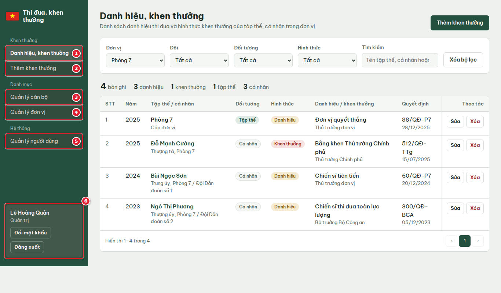
- 1Danh hiệu, khen thưởng: màn hình mặc định, mọi vai trò đều có.
- 2Thêm khen thưởng: nhập tay hoặc import Excel (Quản trị, Biên tập).
- 3Quản lý cán bộ (chỉ Quản trị).
- 4Quản lý đơn vị (chỉ Quản trị).
- 5Văn bản quy định: mọi vai trò đều xem và tải về được (mục 12).
- 6Quản lý người dùng (chỉ Quản trị).
- 7Khung cuối menu: họ tên, vai trò của bạn, nút Đổi mật khẩu và Đăng xuất.
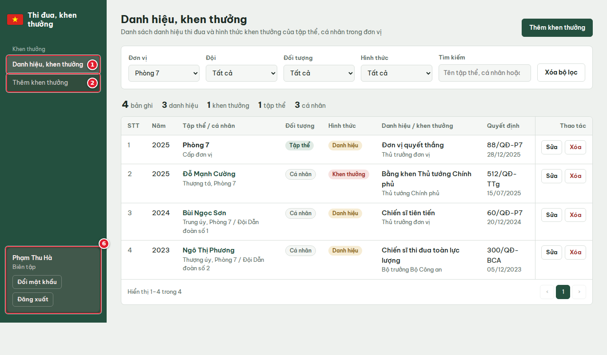
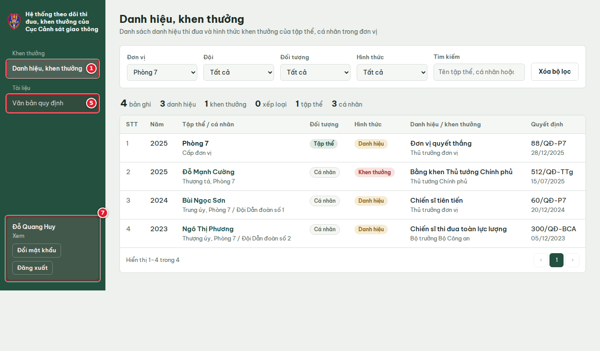
3. Đăng nhập, đổi mật khẩu, đăng xuất
3.1. Đăng nhập
Mở địa chỉ của hệ thống do Quản trị cung cấp. Chưa đăng nhập thì mọi đường dẫn đều chuyển về trang đăng nhập.
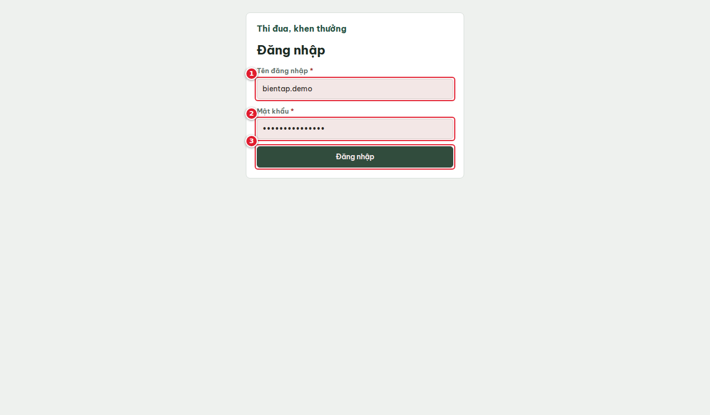
- 1Nhập Tên đăng nhập (do Quản trị cấp, ví dụ
bientap.demo). - 2Nhập Mật khẩu.
- 3Bấm Đăng nhập. Hệ thống mở màn hình Danh hiệu, khen thưởng.
| Thông báo | Nghĩa là gì, làm gì |
|---|---|
| Tên đăng nhập hoặc mật khẩu không đúng | Sai tên hoặc sai mật khẩu (hệ thống cố ý không nói rõ sai phần nào). Kiểm tra bàn phím tiếng Việt, phím Caps Lock rồi nhập lại. |
| Tài khoản đang bị khóa | Tài khoản bị khóa do nhập sai 5 lần liên tiếp (tự mở sau 15 phút) hoặc do Quản trị khóa. Nhờ Quản trị mở khóa hoặc đặt lại mật khẩu. |
| Bạn thử quá nhiều lần, vui lòng đợi rồi thử lại | Quá 10 lần thử trong 1 phút. Đợi khoảng 1 phút rồi thử lại. |
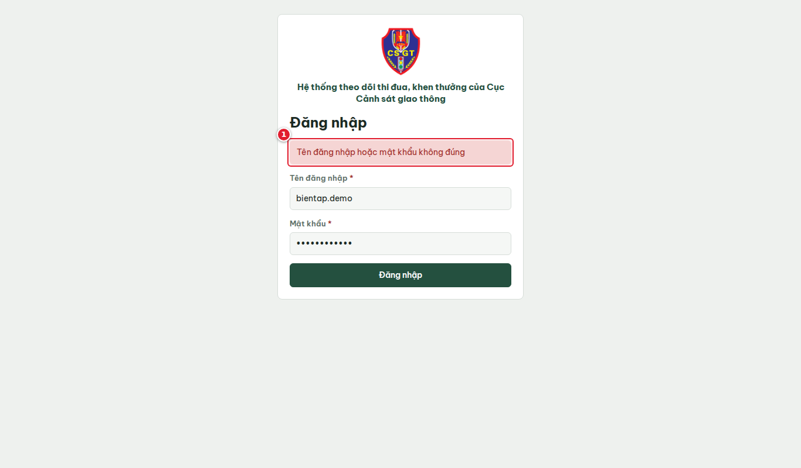
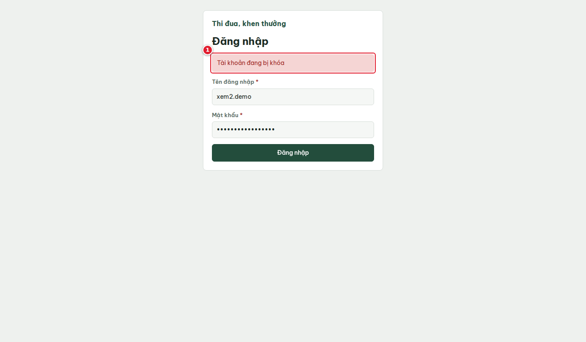
3.2. Đổi mật khẩu bắt buộc (lần đăng nhập đầu hoặc sau khi được đặt lại)
Tài khoản mới tạo, hoặc vừa được Quản trị đặt lại mật khẩu, phải đổi mật khẩu trước khi dùng bất kỳ chức năng nào. Mọi đường dẫn khác đều bị chuyển về màn hình này.
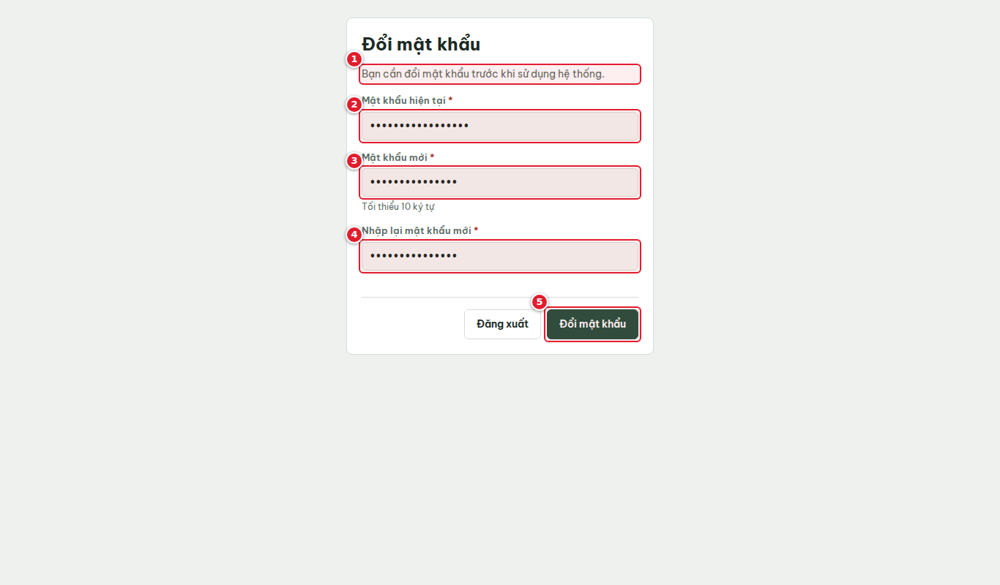
- 1Dòng thông báo cho biết bạn bắt buộc phải đổi mật khẩu.
- 2Mật khẩu hiện tại: nhập mật khẩu tạm Quản trị đã gửi.
- 3Mật khẩu mới: tối thiểu 10 ký tự và khác mật khẩu cũ.
- 4Nhập lại mật khẩu mới: phải giống ô trên.
- 5Bấm Đổi mật khẩu. Thành công thì vào màn hình danh sách.
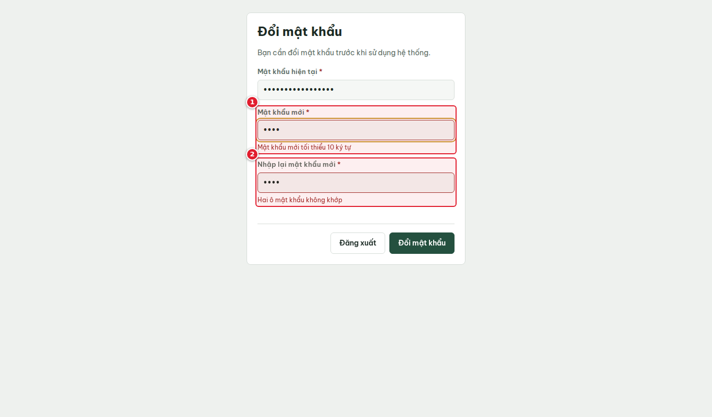
| Thông báo | Cách sửa |
|---|---|
| Mật khẩu mới tối thiểu 10 ký tự | Dùng mật khẩu dài hơn, ví dụ một câu dễ nhớ kèm số. |
| Hai ô mật khẩu không khớp | Gõ lại cả hai ô cho giống nhau. |
| Mật khẩu mới phải khác mật khẩu cũ | Chọn một mật khẩu chưa từng dùng cho tài khoản này. |
Đổi mật khẩu thành công sẽ đăng xuất các thiết bị khác đang dùng tài khoản của bạn.
3.3. Đổi mật khẩu chủ động và đăng xuất
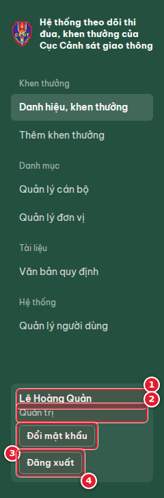
- 1Họ tên của bạn.
- 2Vai trò của bạn (Quản trị, Biên tập hoặc Xem).
- 3Đổi mật khẩu: mở màn hình đổi mật khẩu (nhập mật khẩu hiện tại, mật khẩu mới hai lần).
- 4Đăng xuất: thoát khỏi hệ thống. Hãy đăng xuất khi dùng máy dùng chung.
4. Bố cục màn hình và menu
Màn hình chia hai phần: menu bên trái (chuyển giữa các chức năng) và nội dung bên phải. Mục đang mở được tô sáng. Ảnh minh họa đầy đủ ở mục 2 (Hình 2.1 đến 2.3) và mục 5. Menu chia nhóm: Khen thưởng, Danh mục, Tài liệu, Hệ thống.
| Bạn muốn | Bấm vào |
|---|---|
| Xem, tra cứu khen thưởng | Menu Danh hiệu, khen thưởng |
| Nhập một khen thưởng | Menu Thêm khen thưởng, tab Nhập thủ công (hoặc nút Thêm khen thưởng ở góc trên bên phải danh sách) |
| Nhập nhiều khen thưởng từ Excel | Menu Thêm khen thưởng, tab Import từ Excel |
| Sửa hoặc xóa một khen thưởng | Nút Sửa hoặc Xóa cuối dòng trong danh sách |
| Xem hồ sơ và quá trình khen thưởng của cán bộ | Bấm tên cán bộ trong danh sách |
| Thêm, sửa cán bộ | Menu Quản lý cán bộ (Quản trị) |
| Thêm, sửa đơn vị và đội | Menu Quản lý đơn vị (Quản trị) |
| Tra cứu, tải về văn bản quy định | Menu Văn bản quy định |
| Thêm, sửa, xóa văn bản quy định | Menu Văn bản quy định, nút Thêm văn bản hoặc Sửa, Xóa cuối dòng (Quản trị, Biên tập) |
| Tạo tài khoản, đặt lại mật khẩu, khóa tài khoản | Menu Quản lý người dùng (Quản trị) |
| Đổi mật khẩu của mình, đăng xuất | Hai nút ở cuối menu |
5. Xem danh sách khen thưởng (lọc, tìm kiếm)
Đây là màn hình mặc định sau khi đăng nhập, hiện mọi bản ghi danh hiệu thi đua và khen thưởng, mới nhất trước (năm giảm dần), mỗi trang 10 dòng.
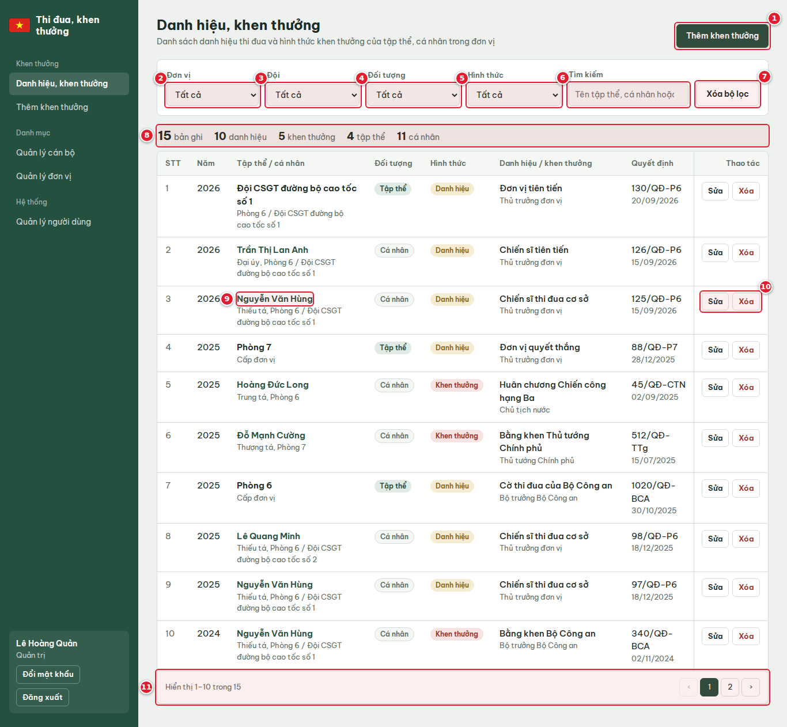
- 1Thêm khen thưởng: mở form nhập (chỉ Quản trị, Biên tập).
- 2Đơn vị: chọn một đơn vị để chỉ xem khen thưởng của đơn vị đó. Đổi đơn vị thì danh sách đội tự đổi theo.
- 3Đội: chọn đội thuộc đơn vị đang chọn. Đơn vị không có đội thì ô này bị khóa ở Tất cả.
- 4Đối tượng: Tất cả, Tập thể hoặc Cá nhân.
- 5Hình thức: Tất cả, Danh hiệu, Khen thưởng hoặc Xếp loại cán bộ (xem Hình 5.3).
- 6Tìm kiếm: gõ từ 2 ký tự trở lên, khớp một phần với tên tập thể, tên cán bộ hoặc số quyết định. Không phân biệt hoa thường, không cần gõ đúng dấu cách thừa.
- 7Xóa bộ lọc: đưa mọi bộ lọc về Tất cả và xóa ô tìm kiếm.
- 8Dòng thống kê: tổng số bản ghi, số danh hiệu, khen thưởng, xếp loại, tập thể, cá nhân theo kết quả lọc hiện tại.
- 9Tên cá nhân là liên kết: bấm để xem chi tiết cán bộ (mục 6). Tên tập thể không bấm được.
- 10Sửa và Xóa từng bản ghi (mục 8). Vai trò Xem không có cột này.
- 11Phân trang:
Hiển thị a–b trong N
và các nút trang. Đổi bộ lọc thì quay về trang 1.
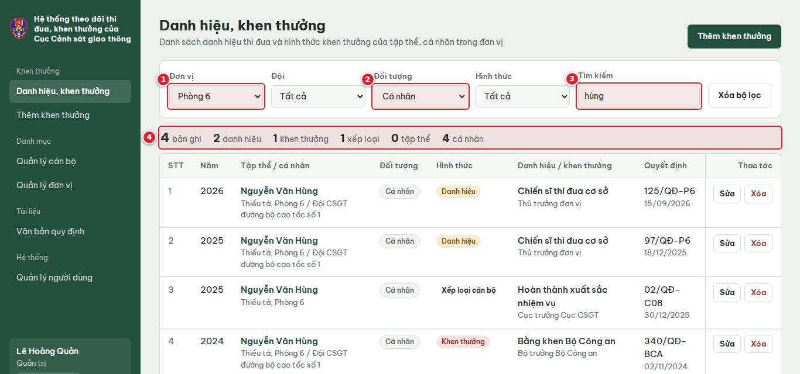
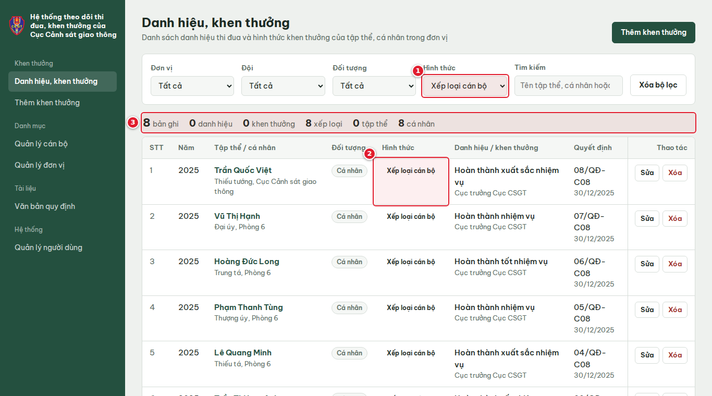
Xếp loại cán bộ là bản ghi theo năm của từng cá nhân (4 mức: Hoàn thành xuất sắc nhiệm vụ, Hoàn thành tốt nhiệm vụ, Hoàn thành nhiệm vụ, Không hoàn thành nhiệm vụ), cấp quyết định mặc định là Cục trưởng Cục CSGT. Mỗi cán bộ chỉ có một xếp loại mỗi năm.
| Cột | Nội dung |
|---|---|
| STT, Năm | Số thứ tự liên tục qua các trang; năm khen thưởng. |
| Tập thể / cá nhân | Tên cán bộ, đội hoặc đơn vị. Dòng nhỏ bên dưới: cấp bậc, đơn vị / đội (cán bộ của Cục ghi Cục Cảnh sát giao thông); tập thể cấp đơn vị ghi Cấp đơn vị. |
| Đối tượng, Hình thức | Nhãn Tập thể / Cá nhân và Danh hiệu / Khen thưởng / Xếp loại cán bộ. |
| Danh hiệu / khen thưởng | Tên danh hiệu, khen thưởng hoặc mức xếp loại (huân chương ghi tên loại); dòng nhỏ là cấp quyết định. |
| Quyết định | Số quyết định và ngày quyết định (dd/mm/yyyy). |
Không có bản ghi nào khớp với bộ lọc hiện tạikèm nút Xóa bộ lọc. Thường là do đang chọn đồng thời nhiều bộ lọc hoặc gõ sai chính tả ô tìm kiếm.
6. Xem chi tiết cán bộ
Bấm vào tên cán bộ (chữ có gạch chân hoặc đậm) trong danh sách khen thưởng, hoặc trong màn hình Quản lý cán bộ.
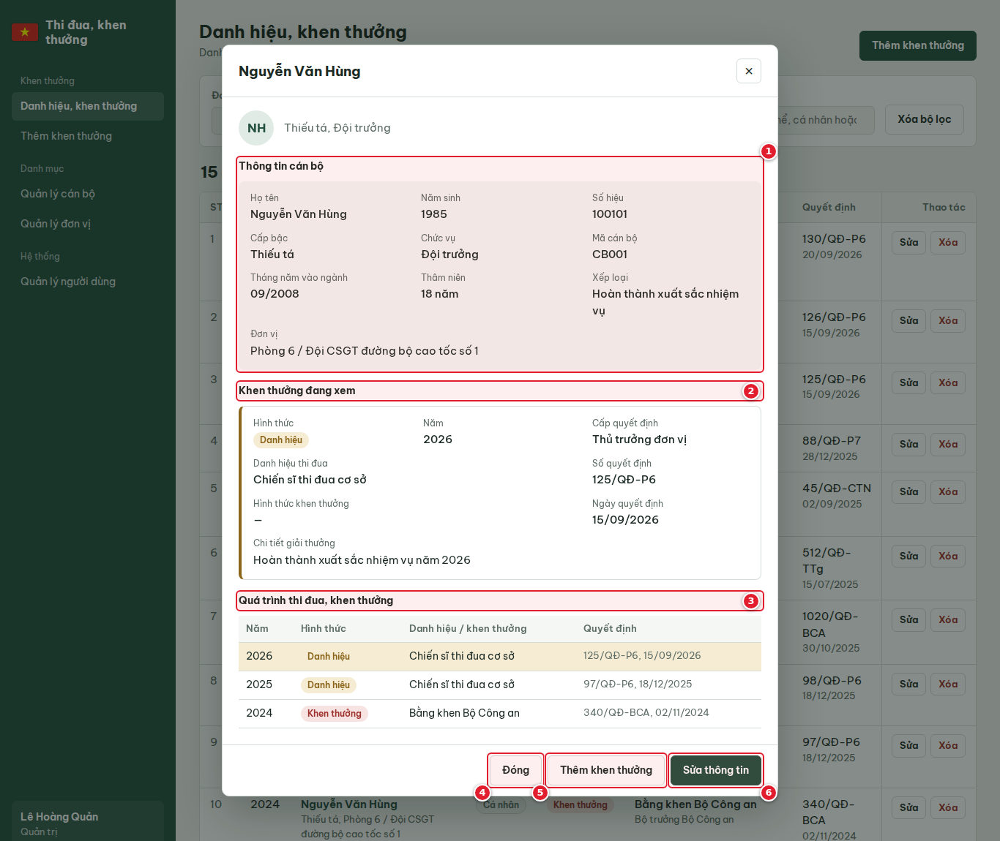
- 1Thông tin cán bộ: họ tên, năm sinh, số hiệu, cấp bậc, chức vụ, mã cán bộ, tháng năm vào ngành, thâm niên (số năm, tính từ năm vào ngành), xếp loại (năm) (mức xếp loại của năm gần nhất, kèm năm), đơn vị / đội. Chưa có dữ liệu (ví dụ cán bộ tạo từ import chưa có năm sinh, số hiệu) thì hiện "—".
- 2Khen thưởng đang xem: chi tiết bản ghi bạn vừa bấm (chỉ hiện khi mở từ danh sách khen thưởng).
- 3Quá trình thi đua, khen thưởng: mọi bản ghi của cán bộ (danh hiệu, khen thưởng và xếp loại các năm), năm mới nhất ở trên; dòng đang xem được tô nổi. Chưa có thì hiện
Cán bộ này chưa có khen thưởng nào
. - 4Đóng (hoặc nút ×, phím Esc, bấm ra vùng nền tối).
- 5Thêm khen thưởng: mở form thêm với cán bộ, đơn vị, đội đã chọn sẵn (Quản trị, Biên tập).
- 6Sửa thông tin: mở form sửa cán bộ (chỉ Quản trị).
Vai trò Xem chỉ có nút Đóng; vai trò Biên tập có thêm nút Thêm khen thưởng.
7. Thêm khen thưởng thủ công
Dành cho Quản trị và Biên tập. Vào menu Thêm khen thưởng (tab Nhập thủ công). Form chia 4 nhóm; ô có dấu * là bắt buộc.
7.1. Khen thưởng cho cá nhân
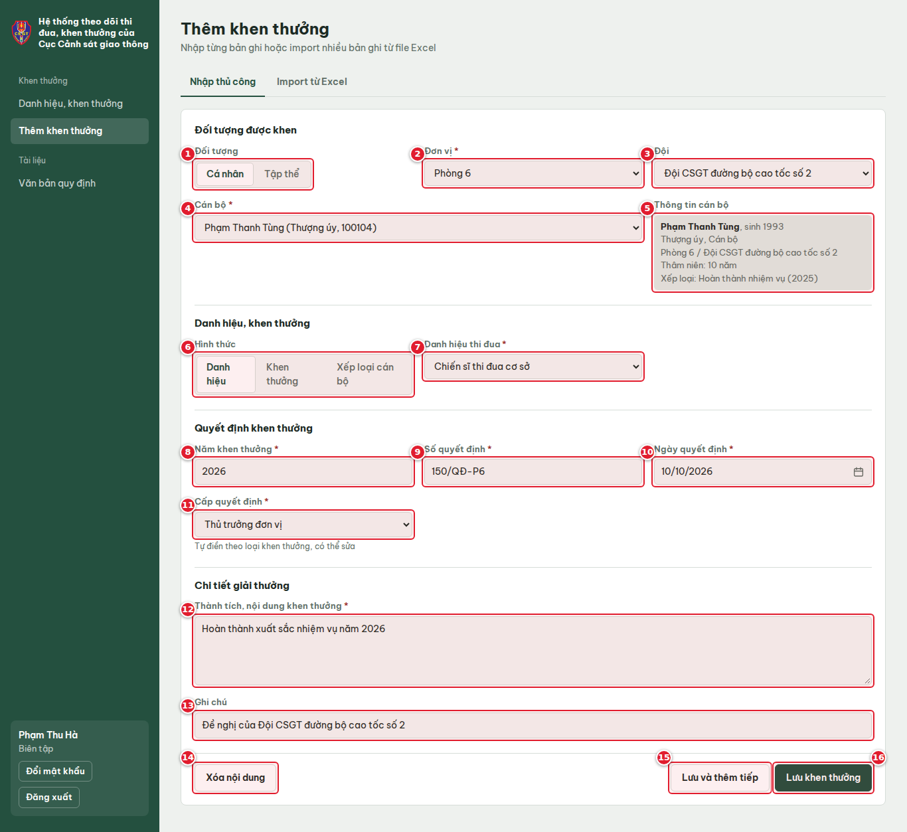
- 1Đối tượng: chọn Cá nhân (mặc định).
- 2Đơn vị *: chọn đơn vị của cán bộ.
- 3Đội: không bắt buộc. Với cá nhân, mục đầu là
Tất cả đội
và chỉ dùng để thu hẹp danh sách cán bộ. Đơn vị không có đội thì ô bị khóa. - 4Cán bộ *: chọn người được khen, hiển thị dạng
Họ tên (cấp bậc, số hiệu)
(cán bộ chưa có số hiệu thì không hiện số hiệu). Ô bị khóa cho tới khi bạn chọn đơn vị. - 5Thông tin cán bộ: chỉ đọc, giúp kiểm tra đã chọn đúng người (họ tên, năm sinh, cấp bậc, chức vụ, đơn vị / đội, thâm niên, xếp loại gần nhất). Cán bộ chưa có năm sinh thì hiện "—".
- 6Hình thức: Danh hiệu (mặc định), Khen thưởng hoặc Xếp loại cán bộ (chỉ có khi Đối tượng là Cá nhân, xem mục 7.4).
- 7Danh hiệu thi đua * (hoặc Hình thức khen thưởng *): danh sách thay đổi theo đối tượng và hình thức.
- 8Năm khen thưởng *: từ 1990 đến 2100, mặc định năm hiện tại.
- 9Số quyết định *: tối đa 50 ký tự, ví dụ
125/QĐ-BCA. - 10Ngày quyết định *: gõ theo dạng dd/mm/yyyy (tự thêm dấu /) hoặc bấm biểu tượng lịch để chọn. Lịch hiển thị tiếng Việt, tuần bắt đầu từ Thứ hai.
- 11Cấp quyết định *: hệ thống tự điền theo loại khen thưởng, bạn có thể đổi.
- 12Thành tích, nội dung khen thưởng *: nhiều dòng, tối đa 2.000 ký tự.
- 13Ghi chú: không bắt buộc, tối đa 500 ký tự.
- 14Xóa nội dung: đưa form về trống, không lưu.
- 15Lưu và thêm tiếp: lưu, giữ nguyên mọi ô trừ Cán bộ để nhập người tiếp theo cùng quyết định (tiện khi cả danh sách cùng một quyết định).
- 16Lưu khen thưởng: lưu, hiện
Đã lưu khen thưởng cho …
, xóa form và về danh sách.
7.2. Khen thưởng cho tập thể
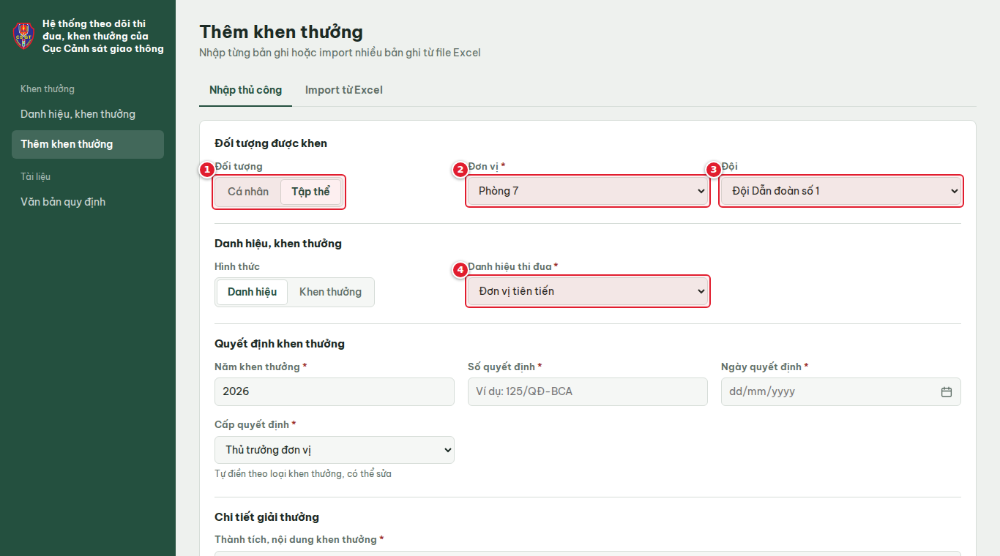
- 1Chọn Đối tượng là Tập thể. Ô Cán bộ biến mất vì không cần, và hình thức Xếp loại cán bộ cũng không còn (xếp loại chỉ dành cho cá nhân).
- 2Chọn Đơn vị.
- 3Đội: để mục đầu
Khen cho cả đơn vị
nếu khen cấp đơn vị, hoặc chọn một đội cụ thể. - 4Danh sách Danh hiệu thi đua chỉ gồm danh hiệu dành cho tập thể (Cờ thi đua của Chính phủ, Cờ thi đua của Bộ Công an, Đơn vị quyết thắng, Đơn vị tiên tiến).
Các nhóm còn lại (quyết định, chi tiết) điền như khen thưởng cá nhân.
7.3. Hình thức khen thưởng và Huân chương
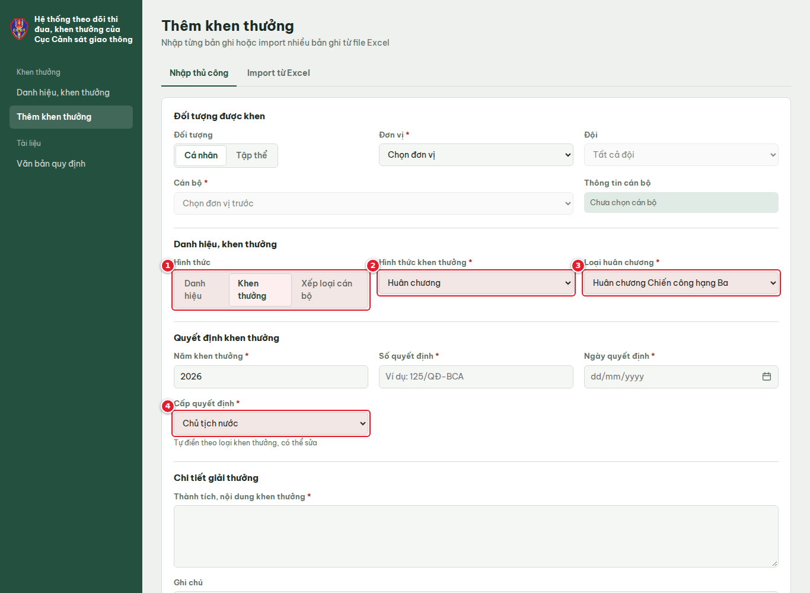
- 1Chọn Hình thức là Khen thưởng.
- 2Chọn Hình thức khen thưởng: Huân chương, Bằng khen Thủ tướng Chính phủ, Bằng khen Bộ Công an hoặc Giấy khen (áp dụng cho cả tập thể và cá nhân).
- 3Nếu chọn Huân chương, bắt buộc chọn thêm Loại huân chương * (ví dụ Huân chương Chiến công hạng Ba).
- 4Cấp quyết định tự điền theo loại (Huân chương: Chủ tịch nước). Bạn đổi được nếu thực tế khác.
| Danh hiệu / khen thưởng | Cấp quyết định tự điền |
|---|---|
| Huân chương | Chủ tịch nước |
| Cờ Thi đua của Chính phủ; Chiến sĩ thi đua toàn quốc; Bằng khen Thủ tướng Chính phủ | Thủ tướng Chính phủ |
| Cờ thi đua của Bộ Công an; Chiến sĩ thi đua toàn lực lượng; Bằng khen Bộ Công an | Bộ trưởng Bộ Công an |
| Đơn vị quyết thắng; Đơn vị tiên tiến; Chiến sĩ thi đua cơ sở; Chiến sĩ tiên tiến; Giấy khen | Thủ trưởng đơn vị |
| Bốn mức Xếp loại cán bộ | Cục trưởng Cục CSGT |
Danh hiệu theo đối tượng: Tập thể: Cờ Thi đua của Chính phủ; Cờ thi đua của Bộ Công an; Đơn vị quyết thắng; Đơn vị tiên tiến. Cá nhân: Chiến sĩ thi đua toàn quốc; Chiến sĩ thi đua toàn lực lượng; Chiến sĩ thi đua cơ sở; Chiến sĩ tiên tiến.
7.4. Xếp loại cán bộ theo năm
Xếp loại cán bộ (Hoàn thành xuất sắc / tốt / Hoàn thành / Không hoàn thành nhiệm vụ) được ghi như một bản ghi theo năm, nhập cùng form này. Mỗi cán bộ chỉ có một xếp loại mỗi năm. Xếp loại hiển thị ở cột Xếp loại (năm) trong Quản lý cán bộ và trong cửa sổ chi tiết cán bộ là mức của năm gần nhất, nên muốn đổi xếp loại hãy thêm hoặc sửa bản ghi xếp loại ở đây (không còn ô chọn xếp loại trong form cán bộ).
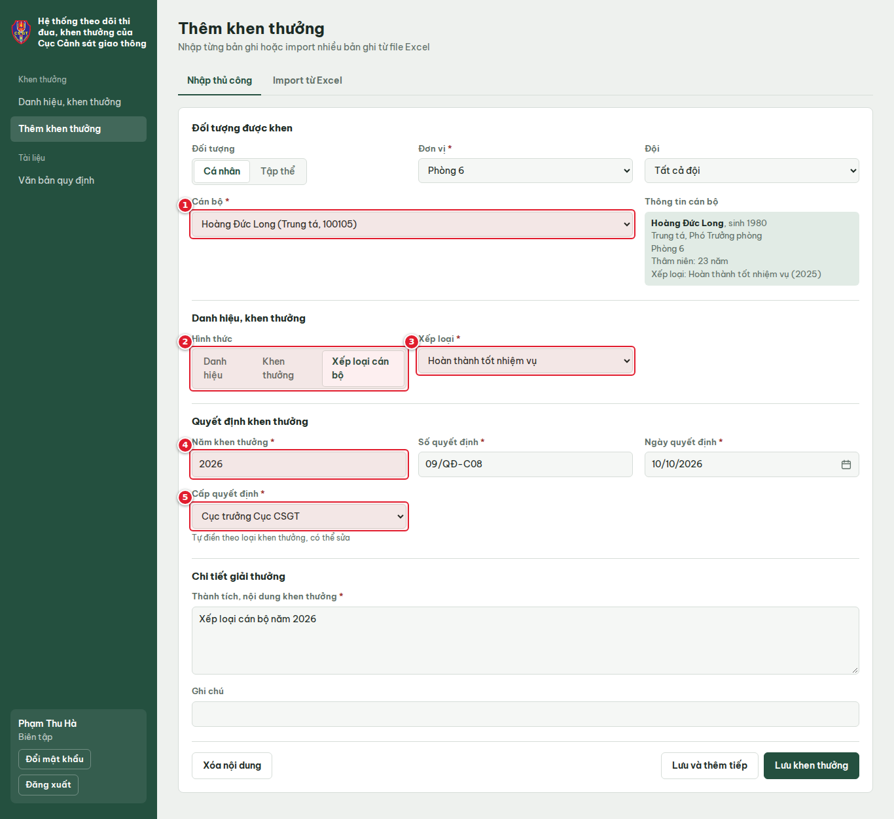
- 1Cán bộ *: chọn đơn vị, rồi chọn cán bộ (thẻ thông tin bên cạnh cho biết xếp loại hiện có).
- 2Hình thức: chọn Xếp loại cán bộ (chỉ hiện khi Đối tượng là Cá nhân).
- 3Xếp loại *: chọn một trong 4 mức.
- 4Năm *: năm xếp loại (mặc định năm hiện tại).
- 5Cấp quyết định tự điền Cục trưởng Cục CSGT, đổi được nếu cần. Số quyết định, ngày quyết định, nội dung điền như khen thưởng khác.
Cán bộ đã có xếp loại của năm đó thì hệ thống từ chối lưu và báo Cán bộ đã có xếp loại năm này
: hãy sửa bản ghi cũ (nút Sửa trong danh sách, lọc Hình thức = Xếp loại cán bộ) thay vì thêm mới.
7.5. Thông báo lỗi khi lưu
Bấm lưu mà thiếu thông tin thì hệ thống hiện lỗi màu đỏ ngay dưới từng ô và đưa con trỏ tới ô lỗi đầu tiên. Sửa xong bấm lưu lại.
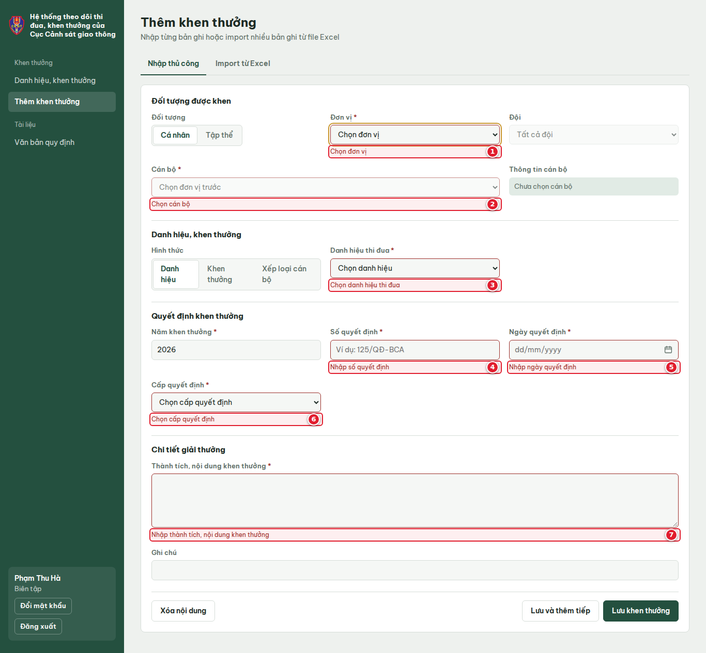
| Số | Thông báo | Cách sửa |
|---|---|---|
| 1 | Chọn đơn vị | Chọn đơn vị ở ô Đơn vị. |
| 2 | Chọn cán bộ | Chọn đơn vị trước, rồi chọn cán bộ (chỉ khi khen cá nhân). |
| 3 | Chọn danh hiệu thi đua / Chọn hình thức khen thưởng | Chọn một mục trong danh sách. Nếu không thấy mục cần chọn, kiểm tra lại Đối tượng và Hình thức ở phía trên. |
| Chọn loại huân chương | Chỉ xuất hiện khi chọn Huân chương: chọn loại. | |
| 4 | Nhập số quyết định | Gõ số quyết định (tối đa 50 ký tự). |
| 5 | Nhập ngày quyết định | Gõ dd/mm/yyyy hoặc chọn từ lịch. |
| 6 | Chọn cấp quyết định | Chọn một cấp quyết định (thường đã tự điền khi chọn loại). |
| 7 | Nhập thành tích, nội dung khen thưởng | Mô tả ngắn thành tích (tối đa 2.000 ký tự). |
7.6. Cảnh báo trùng
Khi bạn bấm lưu, nếu đã có bản ghi cùng đối tượng (cùng cán bộ, hoặc cùng đơn vị và đội), cùng danh hiệu / khen thưởng (huân chương thì cùng loại) và cùng năm, hệ thống hỏi lại. Đây chỉ là cảnh báo, không chặn.
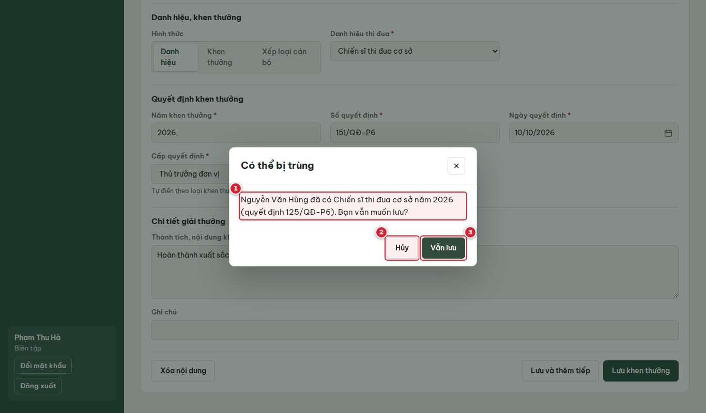
Có thể bị trùng
- 1Nội dung nêu ai đã có khen thưởng nào, năm nào, theo số quyết định nào. Đối chiếu để biết có đúng là nhập lặp không.
- 2Hủy: quay lại form, giữ nguyên dữ liệu để bạn kiểm tra hoặc sửa.
- 3Vẫn lưu: lưu bản ghi (dùng khi đây là khen thưởng khác, ví dụ cùng loại nhưng hai quyết định khác nhau).
8. Sửa, xóa khen thưởng
Dành cho Quản trị và Biên tập, thực hiện từ nút Sửa / Xóa cuối mỗi dòng của danh sách (bước 10 ở Hình 5.1).
8.1. Sửa
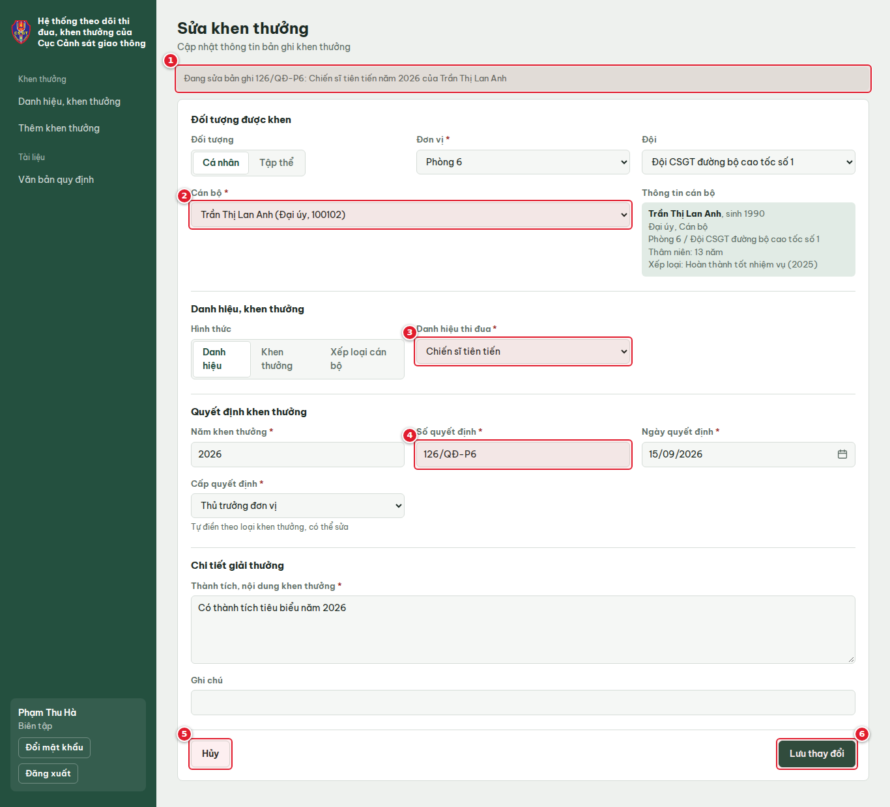
- 1Dòng thông báo cho biết bạn đang sửa bản ghi nào (
Đang sửa bản ghi …: … năm … của …
). - 2Mọi ô đã điền sẵn theo bản ghi, kể cả đối tượng, hình thức, loại huân chương. Sửa ô cần đổi, ví dụ chọn cán bộ khác.
- 3Danh hiệu / khen thưởng cũng sửa được với cùng quy tắc như khi thêm.
- 4Số quyết định, ngày, cấp quyết định, thành tích cũng sửa được.
- 5Hủy: về danh sách, không lưu. Rời màn hình bằng menu cũng là hủy.
- 6Lưu thay đổi: kiểm tra, cảnh báo trùng (nếu có), lưu, hiện
Đã cập nhật khen thưởng của …
rồi về danh sách, giữ nguyên bộ lọc.
8.2. Xóa
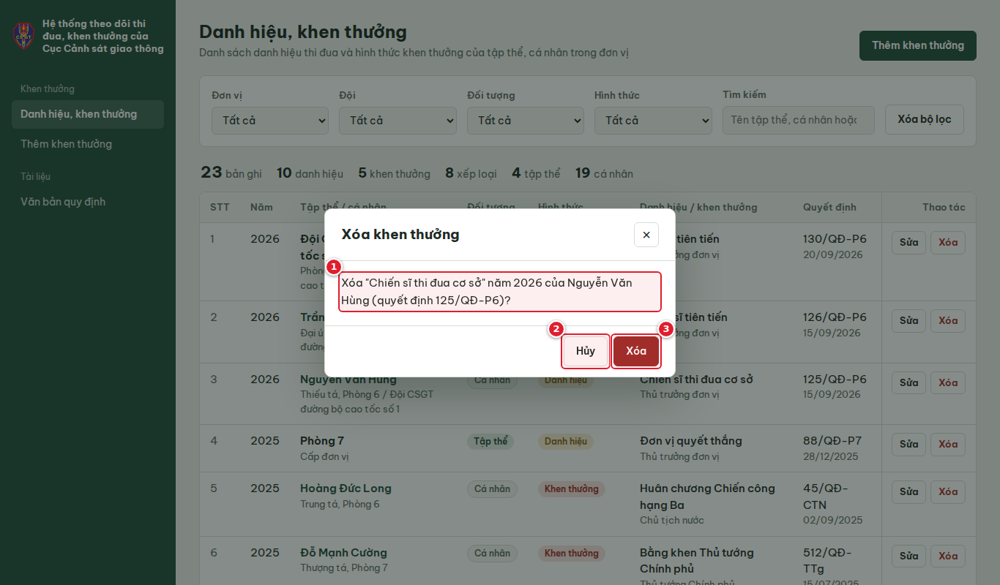
- 1Đọc kỹ nội dung: tên danh hiệu / khen thưởng, năm, tên người hoặc tập thể và số quyết định của bản ghi sắp xóa.
- 2Hủy: không xóa.
- 3Xóa: xóa bản ghi, hiện
Đã xóa khen thưởng của …
và làm mới danh sách.
9. Import khen thưởng từ Excel
Dùng khi có nhiều bản ghi cần nhập cùng lúc (danh hiệu, khen thưởng và xếp loại cán bộ). Hệ thống kiểm tra từng dòng trước, chỉ nhập các dòng hợp lệ; dòng lỗi được báo rõ lý do để bạn sửa trong file rồi tải lên lại. Dành cho Quản trị và Biên tập.
9.1. Quy trình
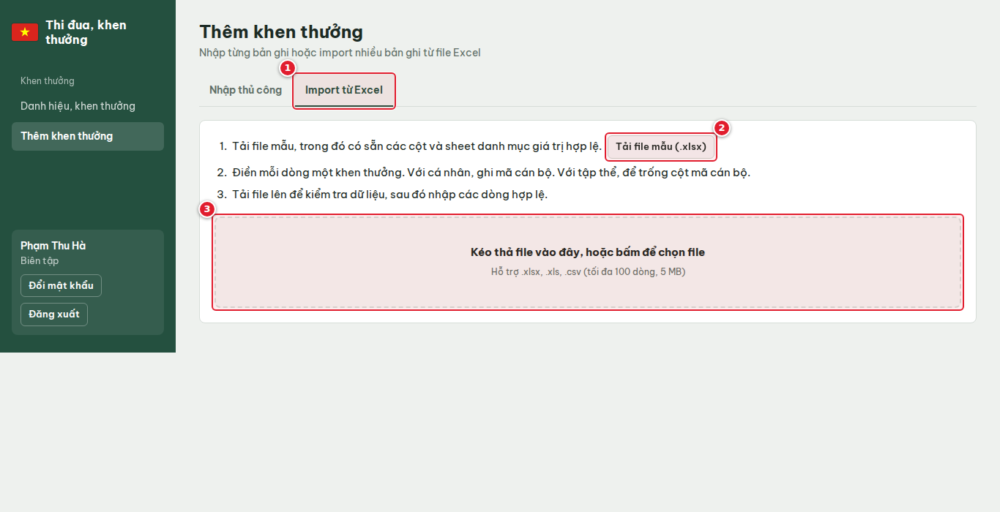
- 1Vào Thêm khen thưởng, bấm tab Import từ Excel.
- 2Bấm Tải file mẫu (.xlsx) để tải file mẫu về máy (có sẵn dòng tiêu đề, vài dòng ví dụ và sheet Danh mục liệt kê giá trị hợp lệ: danh hiệu, khen thưởng, xếp loại, đơn vị, đội, cấp bậc, chức vụ, cấp quyết định).
- 3Điền dữ liệu vào sheet đầu tiên (Khen thưởng), mỗi dòng một bản ghi, rồi lưu file. Sau đó kéo thả file vào vùng tải lên này, hoặc bấm vào vùng đó để chọn file.
9.2. Giới hạn của file
| Định dạng | .xlsx, .xls, .csv. Hệ thống chỉ đọc sheet đầu tiên, bỏ qua dòng trống. |
|---|---|
| Dung lượng | Tối đa 5 MB mỗi file. Vượt quá: File vượt quá 5 MB. |
| Số dòng | Tối đa 100 dòng dữ liệu mỗi lần (không tính dòng tiêu đề và dòng trống). Vượt quá: File có N dòng, tối đa 100 dòng mỗi lần nhập. Hãy tách file thành nhiều file nhỏ. |
| Cột bắt buộc | Phải có đủ các cột trừ Đội, Cấp quyết định, Ghi chú. Thiếu một cột bắt buộc thì từ chối cả file và liệt kê tên các cột thiếu. Đừng đổi tên hay xóa cột tiêu đề của file mẫu (file chỉ có tập thể vẫn giữ các cột Họ và tên, Cấp bậc, Chức vụ, chỉ để ô trống). |
9.3. Các cột của file mẫu (14 cột)
| Cột | Bắt buộc | Ví dụ | Quy tắc |
|---|---|---|---|
| Đối tượng | Có | Cá nhân | Tập thể hoặc Cá nhân |
| Họ và tên | Có, khi Cá nhân | Nguyễn Hữu Đạt | Họ tên cán bộ (tối đa 100 ký tự); không phân biệt hoa thường, khoảng trắng thừa. Để trống khi Tập thể |
| Cấp bậc | Có, nếu cán bộ chưa có trong hệ thống | Trung úy | Ghi đúng tên cấp bậc trong sheet Danh mục. Cán bộ đã có trong hệ thống thì dữ liệu hiện có được giữ nguyên, cột này không làm đổi cấp bậc. Để trống khi Tập thể |
| Chức vụ | Có, nếu cán bộ chưa có trong hệ thống | Cán bộ | Ghi đúng tên chức vụ trong sheet Danh mục (gồm Cục trưởng, Phó Cục trưởng). Quy tắc như cột Cấp bậc |
| Đơn vị | Có | Phòng 6 | Khớp tên hoặc mã đơn vị (gồm Cục Cảnh sát giao thông) |
| Đội | Không | Đội Dẫn đoàn số 1 | Phải thuộc đơn vị ở cột Đơn vị. Có ghi đội thì dùng đội để xác định cán bộ (mục 9.4) |
| Hình thức | Có | Danh hiệu | Danh hiệu, Khen thưởng hoặc Xếp loại cán bộ (xếp loại chỉ dành cho Cá nhân) |
| Danh hiệu / khen thưởng | Có | Chiến sĩ thi đua cơ sở | Hợp lệ theo đối tượng và hình thức. Với huân chương ghi đúng tên loại, ví dụ Huân chương Chiến công hạng Ba. Với xếp loại ghi một trong 4 mức, ví dụ Hoàn thành tốt nhiệm vụ |
| Năm | Có | 2026 | Số nguyên từ 1990 đến 2100 (với xếp loại: năm được xếp loại) |
| Số quyết định | Có | 125/QĐ-ĐV | Tối đa 50 ký tự |
| Ngày quyết định | Có | 15/09/2026 | Dạng dd/mm/yyyy, yyyy-mm-dd hoặc ô kiểu ngày của Excel |
| Cấp quyết định | Không | Bộ trưởng Bộ Công an | Để trống thì lấy mặc định theo loại (xếp loại: Cục trưởng Cục CSGT) |
| Chi tiết giải thưởng | Có | Hoàn thành xuất sắc nhiệm vụ năm 2026 | Thành tích, nội dung khen thưởng (tối đa 2.000 ký tự) |
| Ghi chú | Không | Tối đa 500 ký tự |
9.4. Cách hệ thống xác định cán bộ (dòng Cá nhân)
Hệ thống tìm cán bộ theo Họ và tên (không phân biệt hoa thường, dấu cách thừa) cùng Đơn vị, và cùng Đội nếu dòng có ghi đội:
| Tìm thấy | Kết quả |
|---|---|
| Đúng 1 cán bộ | Dùng cán bộ đó. Cấp bậc, chức vụ trong file chỉ để tham khảo, không cập nhật hồ sơ cán bộ. |
| Chưa có ai | Hệ thống tạo cán bộ mới khi bạn bấm nhập, từ Họ và tên, Cấp bậc, Chức vụ, Đơn vị, Đội của dòng đó (bắt buộc ghi đủ cấp bậc, chức vụ hợp lệ). Mã cán bộ tự sinh; năm sinh, số hiệu để trống, bổ sung sau ở Quản lý cán bộ. Nhiều dòng của cùng một người mới trong file chỉ tạo cán bộ một lần. Bảng xem trước đánh dấu dòng này bằng nhãn mới. |
| Từ 2 người trở lên (trùng tên) | Báo lỗi dòng Có N cán bộ trùng tên … trong …, không nhập. Hãy ghi thêm cột Đội để phân biệt; nếu vẫn trùng, nhập tay từng bản ghi ở màn hình Thêm khen thưởng. |
9.5. Dòng Xếp loại cán bộ
- Cột Hình thức ghi Xếp loại cán bộ, cột Danh hiệu / khen thưởng ghi một trong 4 mức xếp loại, cột Năm là năm xếp loại.
- Chỉ áp dụng cho Cá nhân; dòng Tập thể báo lỗi
Xếp loại cán bộ chỉ áp dụng cho cá nhân
. - Mỗi cán bộ chỉ có một xếp loại mỗi năm. Nếu đã có thì dòng bị lỗi (không phải "có thể trùng"):
Cán bộ đã có xếp loại năm …
, hoặc… (trùng với dòng N trong file)
khi hai dòng trong file cùng cán bộ, cùng năm.
9.6. Bảng xem trước và trạng thái từng dòng
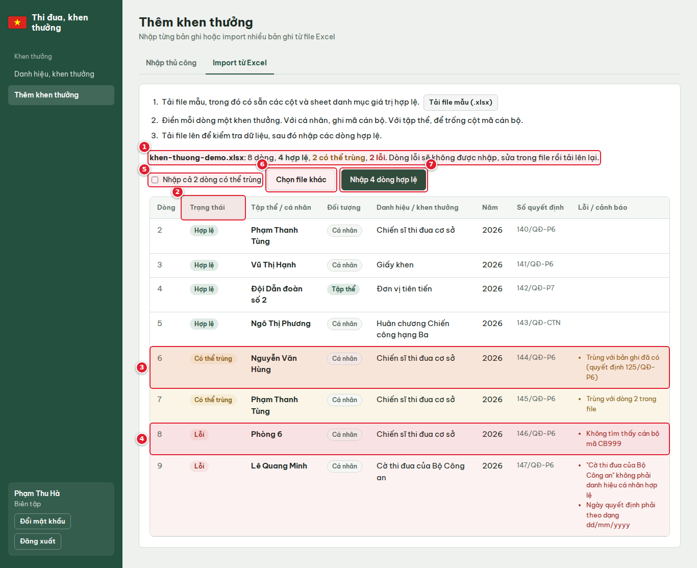
- 1Dòng tóm tắt: tên file, tổng số dòng, số dòng hợp lệ, có thể trùng và lỗi.
- 2Cột Trạng thái của từng dòng (xem bảng dưới).
- 3Nhãn mới cạnh tên: cán bộ chưa có trong hệ thống, sẽ được tạo khi nhập (cột cuối ghi
Sẽ tạo cán bộ mới
). Kiểm tra họ tên cho đúng trước khi nhập. - 4Dòng Có thể trùng (tô vàng): cột cuối ghi trùng với bản ghi nào.
- 5Dòng Lỗi (tô đỏ): cột cuối ghi lý do. Sửa trong file Excel rồi tải lên lại.
- 6Ô tích Nhập cả N dòng có thể trùng: chỉ tích khi chắc chắn muốn nhập các dòng trùng.
- 7Chọn file khác: bỏ file này, làm lại từ đầu.
- 8Nhập N dòng hợp lệ: nhập các dòng sẽ được nhập (N là con số chính xác).
Trong ví dụ: dòng 2 là cán bộ có sẵn, dòng 3 là cán bộ mới (nhãn mới), dòng 4 là một dòng xếp loại (hình thức Xếp loại cán bộ), dòng 7 trùng bản ghi đã có, dòng 8 trùng dòng 2 trong file, dòng 9 lỗi cấp bậc không có trong danh mục, dòng 10 lỗi vì cán bộ đã có xếp loại năm 2025.
| Trạng thái | Nghĩa là | Mặc định |
|---|---|---|
| Hợp lệ | Dữ liệu đúng, không trùng. Có thể kèm nhãn mới (sẽ tạo cán bộ mới). | Được nhập |
| Có thể trùng (vàng) | Dữ liệu đúng nhưng đã có bản ghi giống (cùng đối tượng, danh hiệu / khen thưởng, năm): Trùng với bản ghi đã có (quyết định …), hoặc trùng với dòng phía trên trong cùng file: Trùng với dòng … trong file. | Không nhập, trừ khi tích ô Nhập cả N dòng có thể trùng |
| Lỗi (đỏ) | Dữ liệu sai hoặc thiếu (kể cả xếp loại đã tồn tại). | Không bao giờ được nhập |
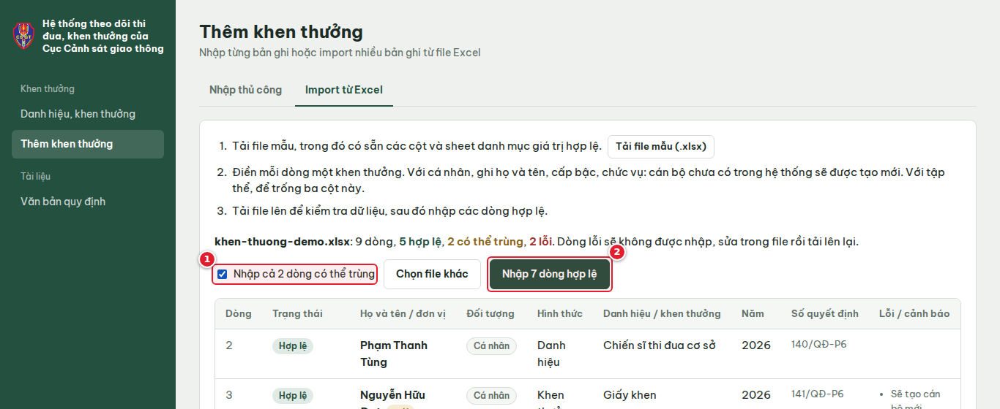
9.7. Nhập và kết quả
Bấm Nhập N dòng hợp lệ. Hệ thống tạo các cán bộ mới (nếu có) và lưu các dòng trong cùng một đợt import, hiện Đã nhập N khen thưởng
và quay về danh sách.
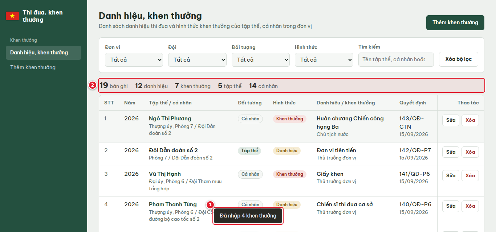
9.8. Lỗi theo dòng thường gặp
| Thông báo | Cách sửa trong file |
|---|---|
| Đối tượng phải là Tập thể hoặc Cá nhân | Sửa cột Đối tượng đúng hai giá trị này. |
| Không tìm thấy đơn vị "…" | Ghi đúng tên hoặc mã đơn vị (xem sheet Danh mục). |
| Đội "…" không thuộc … | Ghi đúng tên đội thuộc đơn vị đó, hoặc để trống. |
| Cá nhân cần có họ tên | Điền cột Họ và tên. |
| Cá nhân cần có cấp bậc / Cá nhân cần có chức vụ | Cán bộ chưa có trong hệ thống nên phải ghi cấp bậc và chức vụ để tạo mới. Điền hai cột này (hoặc sửa họ tên nếu bạn gõ sai tên một cán bộ đã có). |
| Không tìm thấy cấp bậc "…" / Không tìm thấy chức vụ "…" | Ghi đúng tên trong sheet Danh mục. |
| Có N cán bộ trùng tên "…" trong … | Trong đơn vị (đội) có nhiều người trùng tên. Ghi thêm cột Đội, hoặc nhập tay bản ghi này. |
| Tập thể không ghi họ tên, cấp bậc, chức vụ | Dòng Tập thể: để trống ba cột Họ và tên, Cấp bậc, Chức vụ. |
| Hình thức phải là Danh hiệu, Khen thưởng hoặc Xếp loại cán bộ | Sửa cột Hình thức. |
| Xếp loại cán bộ chỉ áp dụng cho cá nhân | Dòng xếp loại phải có Đối tượng là Cá nhân. |
| Cán bộ đã có xếp loại năm … (có thể kèm: trùng với dòng N trong file) | Mỗi cán bộ một xếp loại mỗi năm. Xóa dòng thừa, hoặc sửa bản ghi xếp loại cũ trong hệ thống. |
| "…" không phải danh hiệu tập thể / danh hiệu cá nhân / hình thức khen thưởng / xếp loại hợp lệ | Tên không khớp đối tượng hoặc hình thức (ví dụ ghi danh hiệu tập thể cho cá nhân). Chọn đúng tên trong sheet Danh mục. |
| Ghi rõ loại huân chương, ví dụ Huân chương Chiến công hạng Ba | Ở cột Danh hiệu / khen thưởng, ghi đủ tên loại huân chương thay cho chữ "Huân chương". |
| Năm không hợp lệ | Năm là số từ 1990 đến 2100. |
| Thiếu số quyết định | Điền cột Số quyết định. |
| Ngày quyết định phải theo dạng dd/mm/yyyy | Ghi ví dụ 15/09/2026 hoặc để ô định dạng ngày của Excel. |
| Thiếu chi tiết giải thưởng | Điền cột Chi tiết giải thưởng. |
10. Quản lý cán bộ (chỉ Quản trị)
Danh sách cán bộ được dùng khi nhập khen thưởng cho cá nhân. Vào menu Quản lý cán bộ.
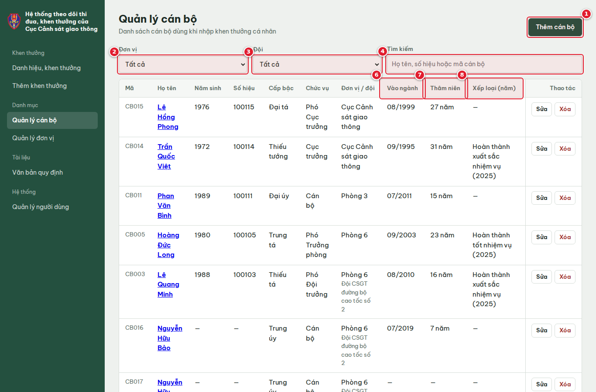
- 1Thêm cán bộ: mở form thêm.
- 2Lọc theo Đơn vị.
- 3Lọc theo Đội (cách hoạt động giống màn hình danh sách khen thưởng).
- 4Tìm kiếm theo họ tên, số hiệu hoặc mã cán bộ. Cán bộ của Cục Cảnh sát giao thông (Cục trưởng, Phó Cục trưởng) cũng nằm trong danh sách này.
- 5Bấm họ tên để xem chi tiết (mục 6).
- 6Cột Vào ngành (tháng/năm).
- 7Cột Thâm niên (số năm, tự tính từ năm vào ngành; để trống nếu chưa có tháng năm vào ngành).
- 8Cột Xếp loại (năm): mức xếp loại của năm gần nhất kèm năm, lấy từ bản ghi Xếp loại cán bộ (mục 7.4), không sửa tại đây. Các ô chưa có dữ liệu (cán bộ chưa có xếp loại, chưa có năm sinh hoặc số hiệu) hiện "—". Bảng còn có cột Số khen thưởng của từng người.
- 9Sửa và Xóa từng cán bộ.
10.1. Thêm, sửa cán bộ
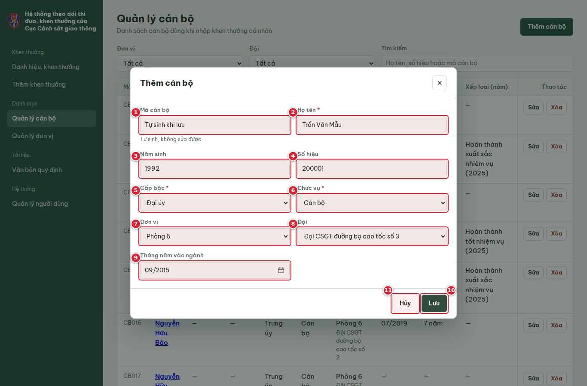
| Số | Trường | Bắt buộc | Cách nhập, quy tắc | Ví dụ |
|---|---|---|---|---|
| 1 | Mã cán bộ | Tự sinh | Dạng CB + 3 chữ số, không sửa được | CB014 |
| 2 | Họ tên | Có | Khoảng trắng thừa được tự gộp | Trần Văn Mẫu |
| 3 | Năm sinh | Không | Nếu nhập: từ 1950 đến 2010 | 1992 |
| 4 | Số hiệu | Không | Nếu nhập: đúng 6 chữ số và không trùng cán bộ khác | 200001 |
| 5 | Cấp bậc | Có | Chọn trong danh sách | Đại úy |
| 6 | Chức vụ | Có | Chọn trong danh sách | Cán bộ |
| 7 | Đơn vị | Có | Chọn trong danh sách | Phòng 6 |
| 8 | Đội | Không | Mục đầu Không thuộc đội; khóa nếu đơn vị không có đội | Đội CSGT đường bộ cao tốc số 3 |
| 9 | Tháng năm vào ngành | Không | Gõ mm/yyyy hoặc bấm biểu tượng lịch để chọn tháng, năm. Không được ở tương lai; nếu đã nhập năm sinh thì năm vào ngành phải từ năm sinh + 16 trở đi | 09/2015 |
10 Lưu: lưu, đóng cửa sổ và hiện thông báo. 11 Hủy: đóng, không lưu.
Thâm niên không phải nhập: hệ thống tự tính bằng năm hiện tại trừ năm vào ngành (không xét tháng), hiển thị "N năm".
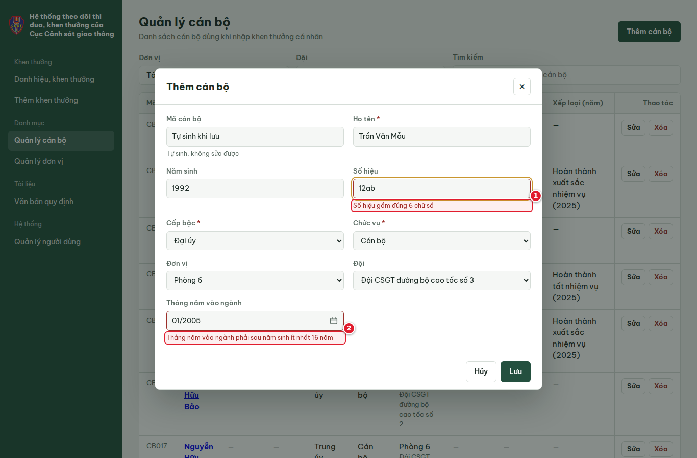
| Thông báo | Cách sửa |
|---|---|
| Nhập họ tên | Điền họ tên. |
| Năm sinh từ 1950 đến 2010 | Nếu có nhập năm sinh thì phải trong khoảng này (hoặc để trống). |
| Số hiệu gồm đúng 6 chữ số | Chỉ gõ 6 chữ số, không chữ cái, không khoảng trắng (hoặc để trống). |
| Số hiệu đã tồn tại | Kiểm tra lại số hiệu; hai cán bộ không được trùng số hiệu. |
| Mã đơn vị đã tồn tại / Tên đơn vị đã tồn tại / Tên đội bị trùng trong đơn vị | (Form đơn vị) đổi mã hoặc tên cho khác với đơn vị, đội đã có. |
| Tên đăng nhập đã tồn tại | (Form người dùng) chọn tên đăng nhập khác. |
| Chọn cấp bậc / Chọn chức vụ / Chọn đơn vị | Chọn từ danh sách. |
| Tháng năm vào ngành không được ở tương lai | Chọn tháng đã qua (tính đến tháng hiện tại). |
| Tháng năm vào ngành phải sau năm sinh ít nhất 16 năm | Chỉ xảy ra khi đã nhập năm sinh: kiểm tra lại năm sinh hoặc tháng năm vào ngành. |
10.2. Xóa cán bộ
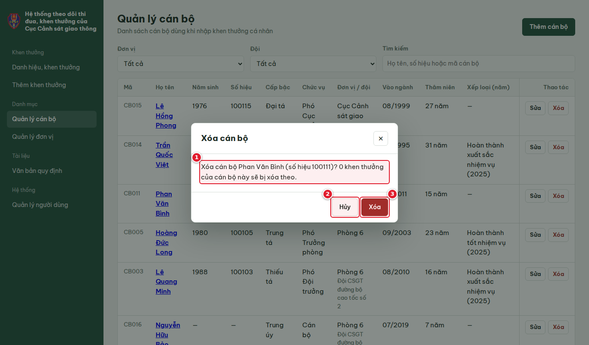
- 1Hộp thoại nêu họ tên, số hiệu (nếu có) và số khen thưởng sẽ bị xóa theo cán bộ (kể cả các bản ghi xếp loại).
- 2Hủy để giữ lại.
- 3Xóa để xác nhận. Thao tác không hoàn tác được trên giao diện.
11. Quản lý đơn vị và đội (chỉ Quản trị)
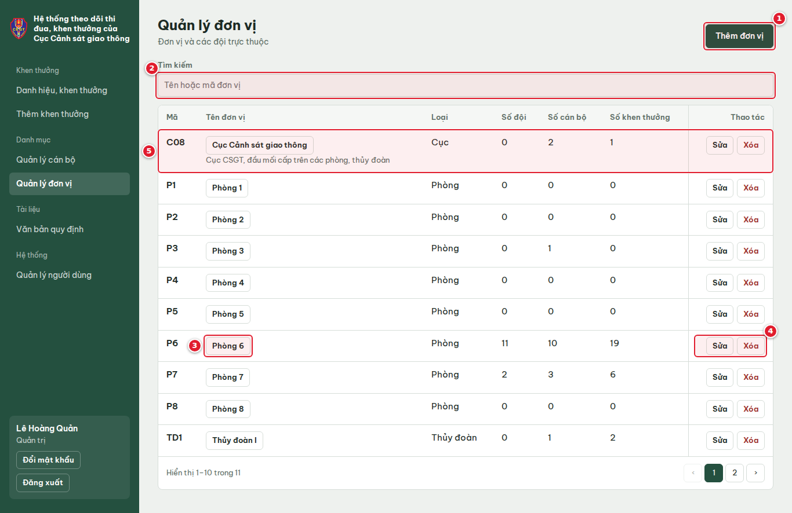
- 1Thêm đơn vị.
- 2Tìm kiếm theo tên hoặc mã đơn vị.
- 3Bấm tên đơn vị để xem chi tiết (số đội, số cán bộ, số khen thưởng, các đội trực thuộc).
- 4Sửa và Xóa đơn vị.
- 5Cục Cảnh sát giao thông (mã C08, loại Cục) luôn đứng đầu danh sách, trước các phòng và thủy đoàn. Cục có thể có cán bộ (Cục trưởng, Phó Cục trưởng) và bản ghi khen thưởng, xếp loại như đơn vị khác; việc lọc theo đơn vị vẫn theo từng đơn vị, không gộp các phòng vào Cục.
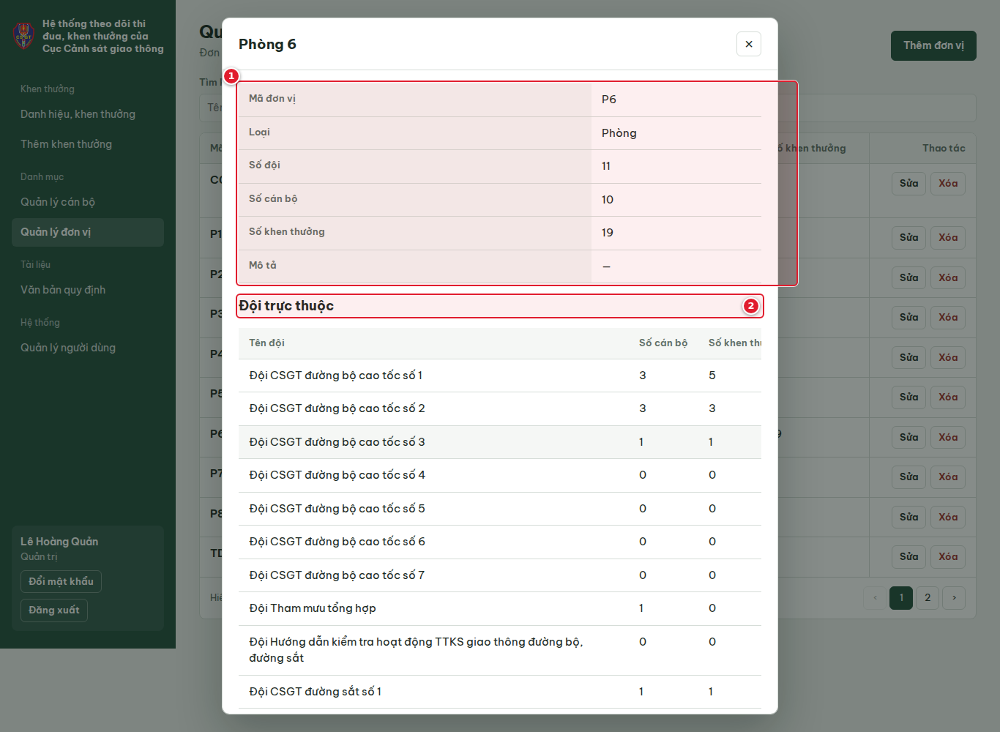
- 1Thông tin đơn vị: mã, loại, số đội, số cán bộ, số khen thưởng, mô tả.
- 2Bảng đội trực thuộc, kèm số cán bộ và số khen thưởng của từng đội.
- 3Sửa đơn vị: mở form sửa.
- 4Đóng.
11.1. Thêm, sửa đơn vị và đội
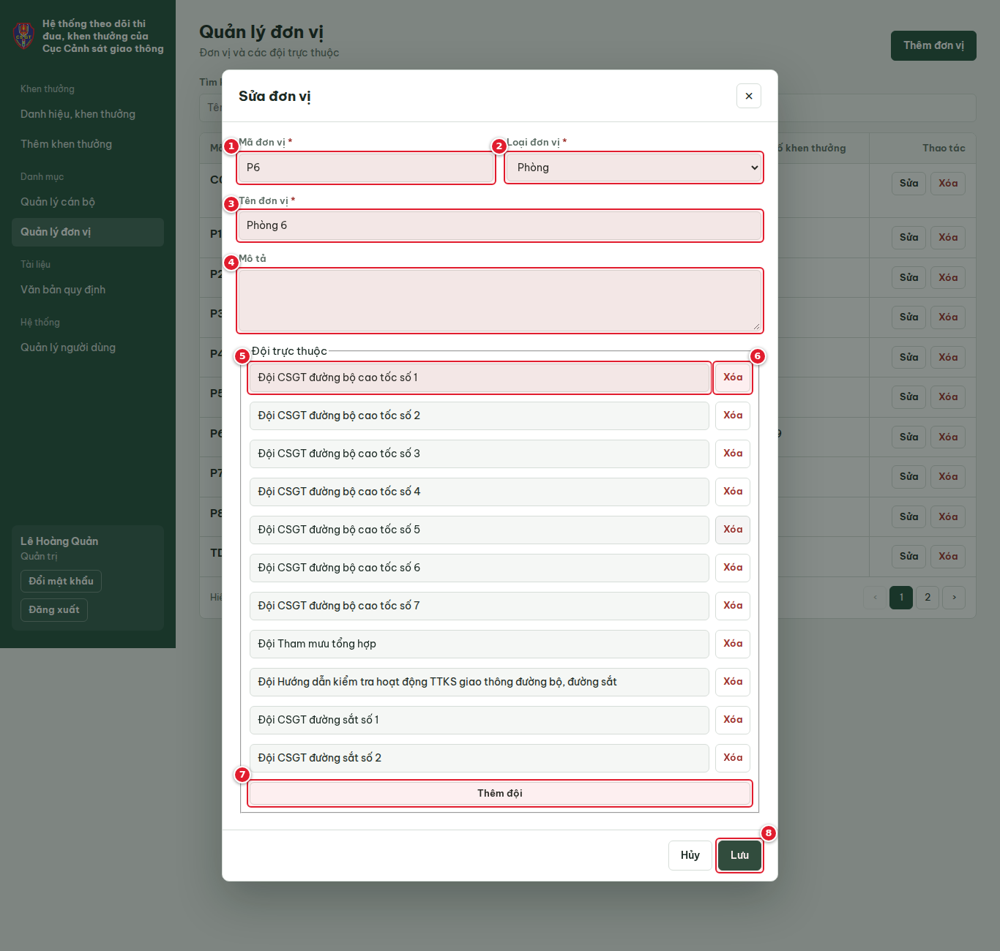
| Số | Trường | Bắt buộc | Quy tắc |
|---|---|---|---|
| 1 | Mã đơn vị | Có | Không trùng mã khác, không phân biệt hoa thường (ví dụ P6) |
| 2 | Loại đơn vị | Có | Cục, Phòng hoặc Thủy đoàn |
| 3 | Tên đơn vị | Có | Không trùng tên đơn vị khác |
| 4 | Mô tả | Không | Tối đa 500 ký tự |
| 5 | Tên đội | Không | Sửa trực tiếp trong ô. Tên không để trống và không trùng trong cùng đơn vị. Đổi tên đội không làm mất lịch sử khen thưởng của đội |
| 6 | Nút Xóa của đội | Bỏ dòng đội khỏi danh sách | |
| 7 | Thêm đội | Thêm một dòng đội mới | |
| 8 | Lưu | Lưu đơn vị cùng toàn bộ danh sách đội |
Không xóa được một đội đang có cán bộ hoặc khen thưởng; hệ thống báo Không thể xóa … vì còn x cán bộ và y khen thưởng thuộc đội này
. Hãy chuyển cán bộ sang đội khác trước.
11.2. Xóa đơn vị
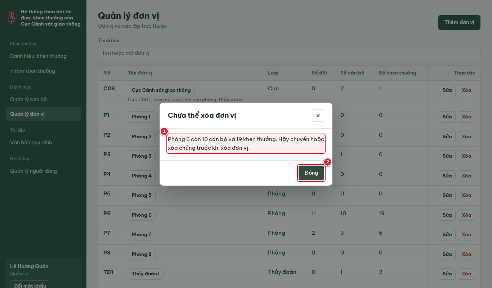
Chưa thể xóa đơn vị
- 1Đơn vị còn cán bộ hoặc khen thưởng thì không xóa được; hộp thoại ghi rõ số lượng còn lại. Hãy chuyển hoặc xóa chúng trước.
- 2Đóng.
Đơn vị không còn dữ liệu thì bấm Xóa sẽ hiện hộp xác nhận Xóa đơn vị …? Các đội trực thuộc cũng bị xóa.
12. Văn bản quy định
Kho văn bản (luật, nghị định, thông tư, quyết định, hướng dẫn...) về công tác thi đua, khen thưởng để tra cứu và tải về. Mọi vai trò xem và tải về được; chỉ Quản trị và Biên tập thêm, sửa, xóa. Vào menu Văn bản quy định (nhóm Tài liệu).
12.1. Danh sách, tìm kiếm, tải về
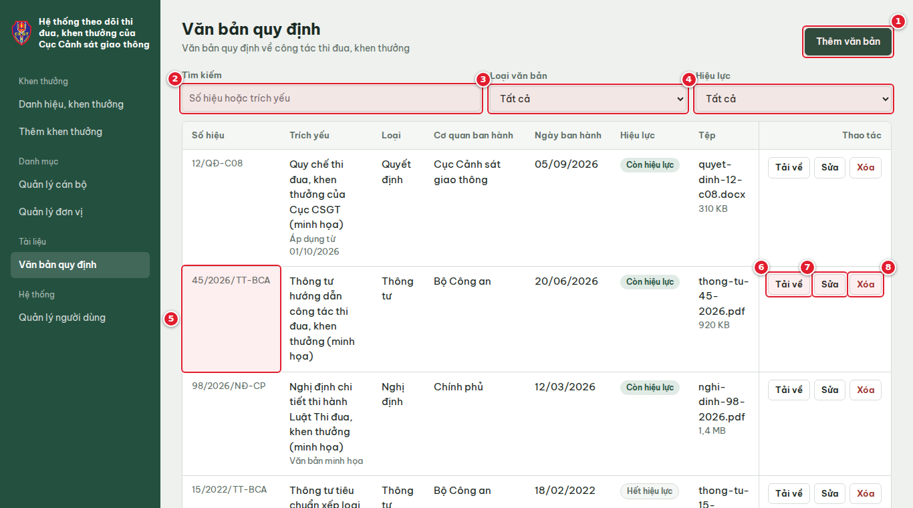
- 1Thêm văn bản: mở form thêm (chỉ Quản trị, Biên tập).
- 2Tìm kiếm: gõ một phần số hiệu hoặc trích yếu.
- 3Loại văn bản: Luật, Nghị định, Thông tư, Quyết định, Hướng dẫn hoặc Khác.
- 4Hiệu lực: Còn hiệu lực hoặc Hết hiệu lực.
- 5Mỗi dòng gồm số hiệu, trích yếu (kèm ghi chú nếu có), loại, cơ quan ban hành, ngày ban hành, hiệu lực, tên tệp và dung lượng. Danh sách xếp ngày ban hành mới nhất trước, mỗi trang 10 dòng.
- 6Tải về: tải tệp văn bản về máy (mọi vai trò).
- 7Sửa: sửa thông tin hoặc thay tệp (Quản trị, Biên tập).
- 8Xóa: xóa văn bản kèm tệp (Quản trị, Biên tập).
12.2. Thêm, sửa văn bản
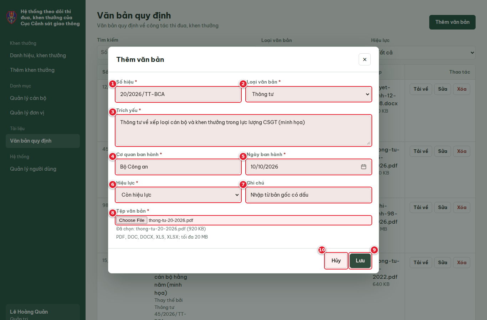
| Số | Trường | Bắt buộc | Quy tắc |
|---|---|---|---|
| 1 | Số hiệu | Có | Tối đa 100 ký tự, ví dụ 45/2026/TT-BCA |
| 2 | Loại văn bản | Có | Chọn trong danh sách |
| 3 | Trích yếu | Có | Tối đa 1.000 ký tự |
| 4 | Cơ quan ban hành | Có | Tối đa 200 ký tự |
| 5 | Ngày ban hành | Có | Gõ dd/mm/yyyy hoặc chọn từ lịch tiếng Việt |
| 6 | Hiệu lực | Có | Còn hiệu lực (mặc định) hoặc Hết hiệu lực |
| 7 | Ghi chú | Không | Tối đa 1.000 ký tự |
| 8 | Tệp văn bản | Có, khi thêm | PDF, DOC, DOCX, XLS, XLSX; tối đa 20 MB. Sau khi chọn, dòng Đã chọn: tên tệp (dung lượng)hiện bên dưới. Khi sửa, để trống thì giữ tệp cũ, chọn tệp mới thì thay thế |
| 9 | Lưu | Lưu văn bản, hiện Đã lưu văn bản | |
| 10 | Hủy | Đóng, không lưu |
| Thông báo | Cách sửa |
|---|---|
| Chọn tệp văn bản | Chưa chọn tệp khi thêm văn bản mới. |
| Tệp vượt quá 20 MB | Nén hoặc tách tệp cho nhỏ hơn 20 MB. |
| Chỉ chấp nhận tệp PDF, DOC, DOCX, XLS, XLSX | Chuyển tệp sang một trong các định dạng này. |
| Loại tệp không khớp với phần mở rộng / Nội dung tệp không đúng định dạng | Tệp bị đổi đuôi hoặc hỏng. Xuất lại tệp từ phần mềm gốc (Word, Excel, trình đọc PDF). |
| Tệp rỗng | Chọn tệp có nội dung. |
12.3. Xóa văn bản
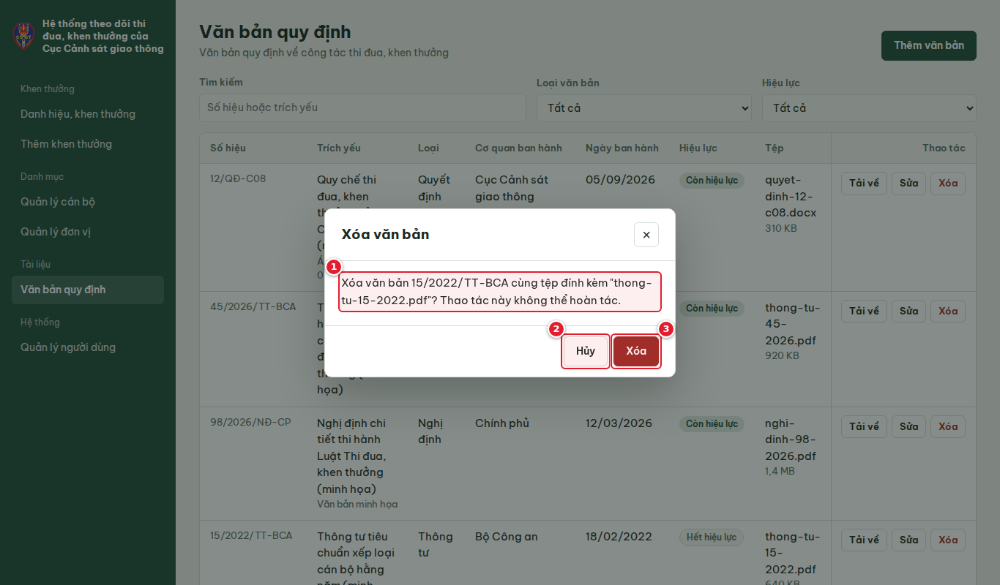
- 1Nội dung nêu số hiệu và tên tệp đính kèm sẽ bị xóa. Thao tác không hoàn tác được.
- 2Hủy: không xóa.
- 3Xóa: xóa văn bản cùng tệp, hiện
Đã xóa văn bản …
.
12.4. Vai trò Xem
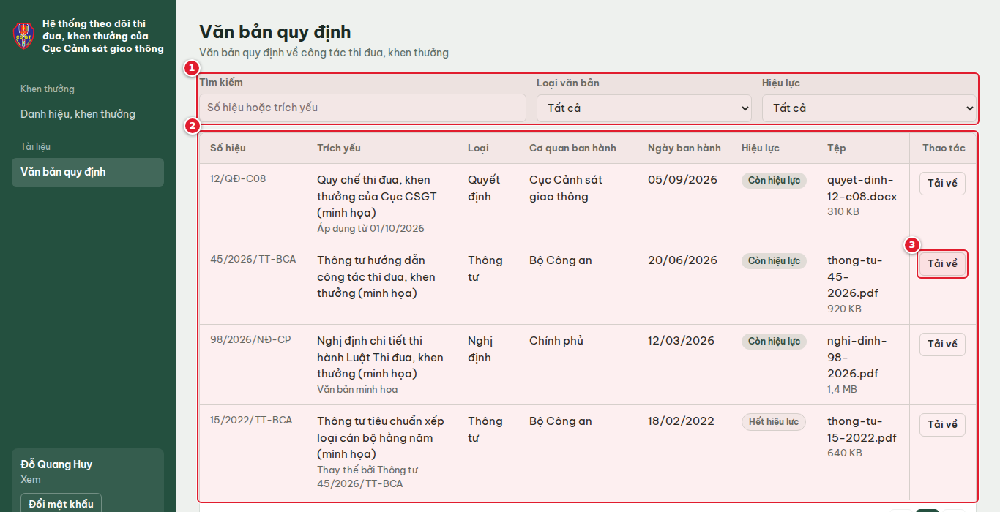
Vai trò Xem tìm kiếm, lọc và tải về như trên nhưng không có nút Thêm văn bản, Sửa, Xóa.
Tệp chưa sẵn sàng hoặc không tồn tại, vui lòng thử lại sau ít phút, hãy đợi vài phút rồi bấm Tải về lại. Nếu sau thời gian dài vẫn báo như vậy, báo Quản trị để tải lại tệp (nút Sửa, chọn tệp mới).
13. Quản lý người dùng (chỉ Quản trị)
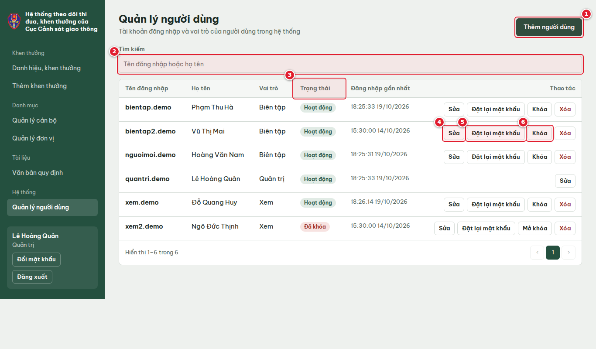
- 1Thêm người dùng.
- 2Tìm kiếm theo tên đăng nhập hoặc họ tên.
- 3Cột Trạng thái: Hoạt động hoặc Đã khóa. Cột Đăng nhập gần nhất cho biết lần dùng cuối.
- 4Sửa: đổi họ tên, vai trò.
- 5Đặt lại mật khẩu: cấp mật khẩu tạm mới.
- 6Khóa / Mở khóa tài khoản.
Dòng của chính bạn chỉ có nút Sửa: bạn không tự khóa, tự đặt lại mật khẩu hoặc tự xóa mình được (muốn đổi mật khẩu hãy dùng nút Đổi mật khẩu cuối menu). Hệ thống luôn phải còn ít nhất 1 Quản trị đang hoạt động.
13.1. Thêm người dùng
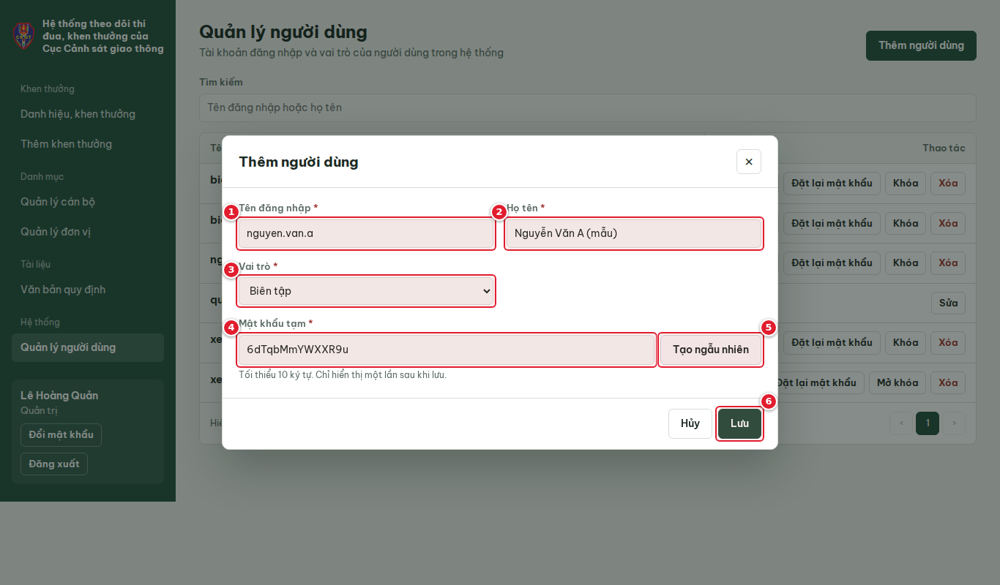
| Số | Trường | Bắt buộc | Quy tắc | Ví dụ |
|---|---|---|---|---|
| 1 | Tên đăng nhập | Có | 3 đến 32 ký tự: chữ không dấu, số, dấu chấm, gạch dưới; không trùng; không sửa được sau khi tạo | nguyen.van.a |
| 2 | Họ tên | Có | Nguyễn Văn A | |
| 3 | Vai trò | Có | Quản trị, Biên tập hoặc Xem (xem mục 2) | Biên tập |
| 4 | Mật khẩu tạm | Có, khi thêm | Tối thiểu 10 ký tự | |
| 5 | Tạo ngẫu nhiên | Tự sinh một mật khẩu tạm mạnh | ||
| 6 | Lưu | Tạo tài khoản |
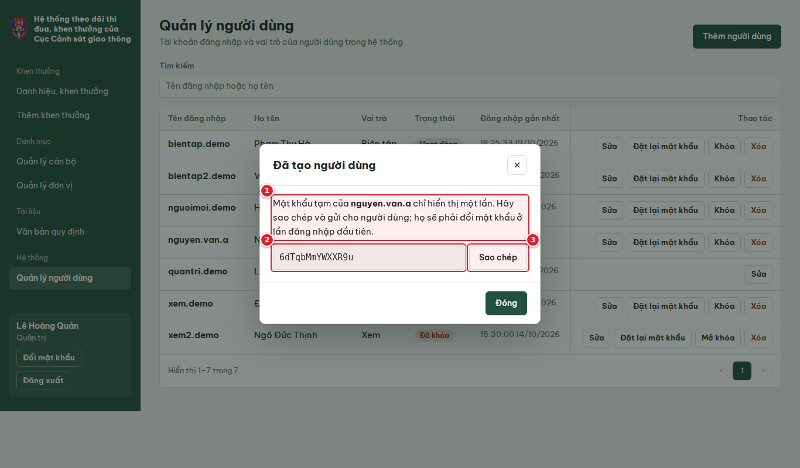
- 1Lời nhắc: mật khẩu chỉ hiển thị một lần; người dùng sẽ phải đổi mật khẩu ở lần đăng nhập đầu.
- 2Mật khẩu tạm.
- 3Sao chép rồi gửi cho người dùng qua kênh an toàn. Đóng cửa sổ là không xem lại được; khi đó hãy đặt lại mật khẩu.
13.2. Đặt lại mật khẩu (khi người dùng quên mật khẩu)
Bấm Đặt lại mật khẩu ở dòng người dùng, xác nhận, hệ thống hiện mật khẩu tạm mới như Hình 13.4. Mọi phiên đăng nhập của người đó bị hủy, họ phải đổi mật khẩu ở lần đăng nhập sau, và tài khoản bị khóa do nhập sai được mở khóa.
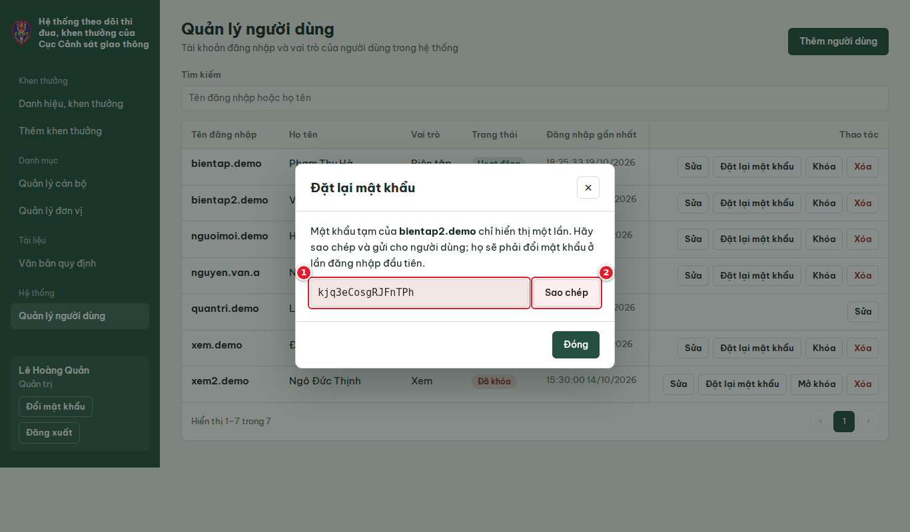
13.3. Khóa và mở khóa
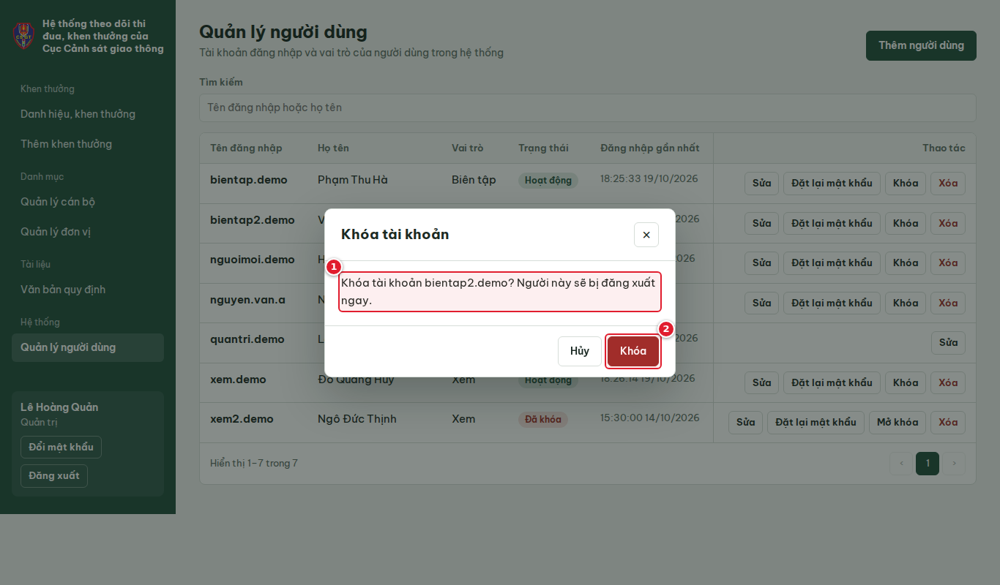
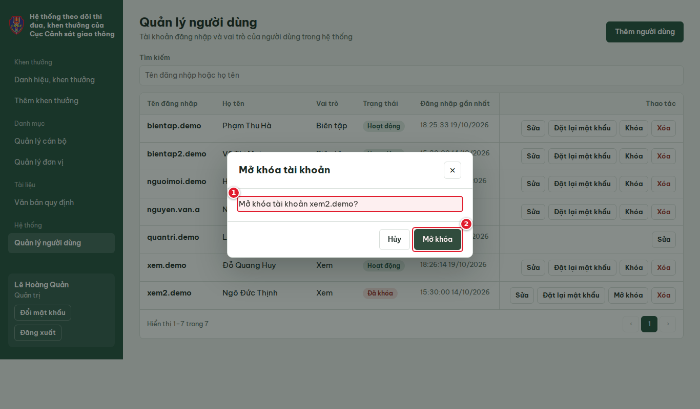
Khóa tài khoản làm người đó bị đăng xuất ngay. Đổi vai trò cũng đăng xuất ngay để quyền mới có hiệu lực. Tài khoản đã từng tạo dữ liệu không xóa được, chỉ khóa; tài khoản chưa tạo dữ liệu thì xóa được bằng nút Xóa.
14. Dùng trên điện thoại
Hệ thống chạy được trên trình duyệt điện thoại. Trên màn hình hẹp, menu nằm ở thanh phía trên, các bộ lọc xếp thành một cột và bảng cuộn ngang.
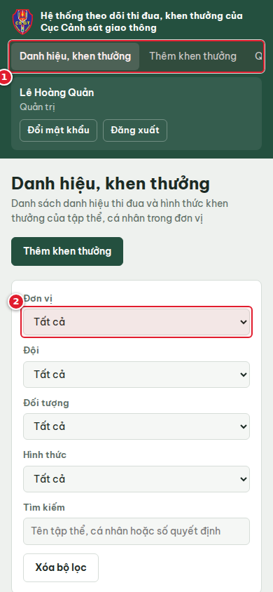
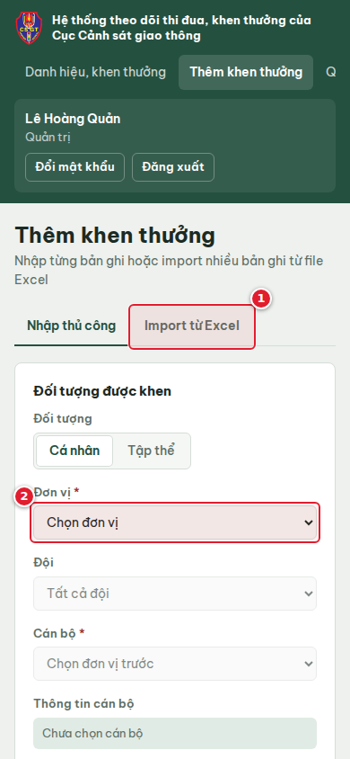
15. Câu hỏi thường gặp, xử lý sự cố
Tôi quên mật khẩu
Hệ thống không tự khôi phục qua email. Hãy nhờ Quản trị bấm Đặt lại mật khẩu cho tài khoản của bạn (mục 13.2). Bạn sẽ nhận một mật khẩu tạm và phải đổi ngay ở lần đăng nhập tiếp theo.
Báo "Tài khoản đang bị khóa"
Do nhập sai mật khẩu 5 lần liên tiếp (tự mở sau 15 phút) hoặc do Quản trị khóa. Đợi 15 phút rồi thử lại, hoặc nhờ Quản trị mở khóa / đặt lại mật khẩu.
Tôi bị đăng xuất đột ngột
Có thể phiên đã hết hạn (8 giờ không hoạt động), hoặc Quản trị vừa khóa tài khoản / đổi vai trò / đặt lại mật khẩu của bạn, hoặc bạn vừa đổi mật khẩu trên thiết bị khác. Đăng nhập lại; nếu báo bị khóa, liên hệ Quản trị.
Tôi không thấy menu Thêm khen thưởng hoặc Quản lý cán bộ
Menu phụ thuộc vai trò (mục 2). Vai trò Xem chỉ thấy danh sách khen thưởng và Văn bản quy định; Biên tập không có các mục quản lý danh mục. Nếu cần thêm quyền, nhờ Quản trị đổi vai trò (sau khi đổi, bạn cần đăng nhập lại).
Tôi không thấy nút Sửa, Xóa
Chỉ Quản trị và Biên tập có các nút này. Vai trò Xem chỉ được xem.
Không tìm thấy cán bộ trong ô Cán bộ khi thêm khen thưởng
Ô chỉ liệt kê cán bộ thuộc đơn vị (và đội) đang chọn. Kiểm tra lại Đơn vị và Đội; nếu cán bộ chưa có trong hệ thống, nhờ Quản trị thêm ở Quản lý cán bộ (hoặc ghi vào file import, cán bộ mới được tạo tự động).
Import báo "Có N cán bộ trùng tên …" (trùng tên cán bộ)
Trong cùng đơn vị (và đội nếu bạn ghi cột Đội) có từ 2 cán bộ trùng họ tên nên hệ thống không đoán được là ai. Ghi thêm cột Đội trong file để phân biệt; nếu hai người cùng đội thì nhập tay bản ghi đó ở màn hình Thêm khen thưởng (chọn đúng người trong ô Cán bộ). Mục 9.4.
Import tạo ra cán bộ lạ trong danh sách cán bộ
Dòng có họ tên chưa khớp ai (thường do sai chính tả hoặc sai đơn vị) sẽ tạo cán bộ mới, không có năm sinh, số hiệu. Trước khi nhập, xem nhãn mới ở bảng xem trước và sửa file nếu tên sai. Cán bộ tạo nhầm: Quản trị xóa ở Quản lý cán bộ (mục 10.2), lưu ý xóa cán bộ cũng xóa khen thưởng của người đó.
Tải văn bản quy định báo "Tệp chưa sẵn sàng hoặc không tồn tại"
Tệp mới tải lên cần tới khoảng 1 phút để sẵn sàng. Đợi vài phút rồi bấm Tải về lại (mục 12.4). Nếu vẫn lỗi, nhờ Quản trị hoặc Biên tập tải lại tệp.
Không thấy xếp loại của cán bộ ở màn hình Quản lý cán bộ
Cột Xếp loại (năm) chỉ hiện khi cán bộ có bản ghi Xếp loại cán bộ; mức hiển thị là của năm gần nhất. Thêm bản ghi ở Thêm khen thưởng (mục 7.4) hoặc import. Form sửa cán bộ không có ô xếp loại.
Hệ thống báo "Cán bộ đã có xếp loại năm này"
Mỗi cán bộ chỉ có một xếp loại mỗi năm. Sửa bản ghi xếp loại đã có (lọc Hình thức = Xếp loại cán bộ rồi bấm Sửa) thay vì thêm mới.
Hệ thống báo dữ liệu có thể trùng
Đã có bản ghi cùng đối tượng, cùng danh hiệu / khen thưởng và cùng năm. Mở danh sách (lọc theo người hoặc đơn vị) để kiểm tra. Nếu thực sự là khen thưởng khác thì bấm Vẫn lưu; nếu nhập lặp thì bấm Hủy. Với import, dòng trùng mặc định không được nhập.
Import báo lỗi cả file (không hiện bảng xem trước)
Thường do: file quá 5 MB; quá 100 dòng dữ liệu; thiếu cột bắt buộc (không đổi tên cột tiêu đề, file theo mẫu cũ có cột Mã cán bộ nhưng không có Họ và tên, Cấp bậc, Chức vụ sẽ bị từ chối: tải lại file mẫu mới); hoặc file không phải .xlsx, .xls, .csv. Sửa file rồi tải lại (mục 9.2).
Tôi nhập nhầm khen thưởng
Bấm Sửa ở dòng đó để chỉnh, hoặc Xóa rồi nhập lại. Với import nhầm cả đợt, báo Quản trị hệ thống để hoàn tác theo đợt.
Ô ngày báo "không hợp lệ"
Ô ngày luôn dùng dạng dd/mm/yyyy (tháng năm: mm/yyyy), không phụ thuộc ngôn ngữ trình duyệt. Kiểm tra ngày có thật (ví dụ không có 31/02) hoặc bấm biểu tượng lịch để chọn.
16. Cập nhật tài liệu này
Ảnh chụp màn hình được tạo tự động từ chính ứng dụng (dữ liệu minh họa giả, cơ sở dữ liệu riêng, cổng 5181), nên không đụng đến dữ liệu thật hay môi trường đang chạy. Khi giao diện thay đổi, chạy lại lệnh sau ở thư mục dự án (cần đã chạy npm ci và npx playwright install chromium):
npm run docs:user-guideLệnh ghi lại toàn bộ ảnh trong docs/user-guide/images/ (tên file giữ nguyên). Mã nguồn nằm ở scripts/user-guide/. Nếu thêm màn hình hoặc đổi thứ tự vòng tròn đánh số trong ảnh, cần sửa lại các bước đánh số tương ứng trong file docs/user-guide/index.html.